DecisionTree
2020-03-17
序言
Chapter 1 决策树
基于树的结构进行决策，在分类问题中，表示基于特征对实例进行分类的过程，可以认为是if-then的集合，也可以认为是定义在特征空间与类空间上的条件概率分布。
1.1 步骤
- 特征选择:基于三个准则：ID3,C4.5,CART
- 决策树的生成
- 决策树的修剪。
决策树的灵魂:依靠某种指标进行树的分裂达到分类/回归的目的，总是希望纯度越高越好
用决策树分类：从根节点开始，对实例的某一特征进行测试，根据测试结果将实例分配到其子节点，此时每个子节点对应着该特征的一个取值，如此递归的对实例进行测试并分配，直到到达叶节点，最后将实例分到叶节点的类中机器学习实战
结点的意义
- 根节点：包含数据集中的所有数据的集合
- 内部节点：每个内部节点为一个判断条件，并且包含数据集中满足从根节点到该节点所有条件的数据的集合。根据内部结点的判断条件测试结果，内部节点对应的数据的集合别分到两个或多个子节点中。
- 叶节点：叶节点为最终的类别，被包含在该叶节点的数据属于该类别。
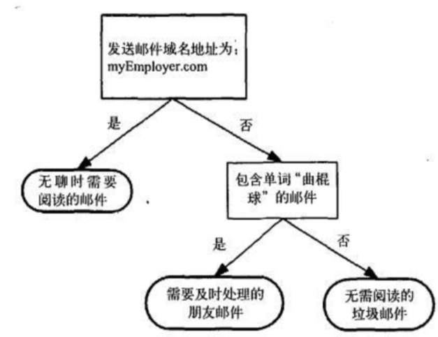
这是一个决策树流程图，正方形代表判断模块，椭圆代表终止模块，表示已经得出结论，可以终止运行，左右箭头叫做分支。
虽然k-近邻算法可以完成很多分类任务，但是其最大的缺点是无法给出数据的内在含义，决策树的优势在于数据形式非常容易理解。
1.2 构造决策树
决策树学习的算法通常是一个递归地选择最优特征，并根据该特征对训练数据进行分割，使得各个子数据集有一个最好的分类的过程。这一过程对应着对特征空间的划分，也对应着决策树的构建。
1.开始：构建根节点，将所有训练数据都放在根节点，选择一个最优特征，按着这一特征将训练数据集分割成子集，使得各个子集有一个在当前条件下最好的分类。
2.如果这些子集已经能够被基本正确分类，那么构建叶节点，并将这些子集分到所对应的叶节点去。
3.如果还有子集不能够被正确的分类，那么就对这些子集选择新的最优特征，继续对其进行分割，构建相应的节点，如果递归进行，直至所有训练数据子集被基本正确的分类，或者没有合适的特征为止。
4.每个子集都被分到叶节点上，即都有了明确的类，这样就生成了一颗决策树。
1.3 ID3
多叉树只能用于分类
划分数据集的大原则是：将无序数据变得更加有序，但是各种方法都有各自的优缺点，信息论是量化处理信息的分支科学，在划分数据集前后信息发生的变化称为信息增益，获得信息增益最高的特征就是最好的选择，所以必须先学习如何计算信息增益，集合信息的度量方式称为香农熵，或者简称熵。
1.3.1 信息熵
熵定义为信息的期望值
信息熵表示随机变量的不确定性，也就是随机变量的复杂度，因此信息熵越小，表示数据集X的纯度越大。
\(H(X)=-\sum_{x \in \mathcal{X}} p(x) \log p(x)\)
1.3.2 条件熵
定义为X给定条件下，Y的条件概率分布的熵对X的数学期望 通俗的讲，就是条件概率分布之下 设有随机变量（X,Y），其联合概率分布为
\(p\left(X=x_{i}, Y=y_{i}\right)=p_{i}, i=1,2, \ldots, n, j=1,2, \ldots, m\) 条件熵H(Y|X)表示在已知随机变量X的条件下随机变量Y的不确定性。随机变量X给定的条件下随机变量Y的条件熵H(Y|X)
\(\begin{aligned} H(Y | X) &=\sum_{x \in X} p(x) H(Y | X=x) \\ &=-\sum_{x \in X} p(x) \sum_{y \in Y} p(y | x) \log p(y | x) \\ &=-\sum_{x \in X} \sum_{y \in Y} p(x, y) \log p(y | x) \end{aligned}\)
在给定某个数（某个变量为某个值）的情况下，另一个变量的熵是多少，变量的不确定性是多少？
因为条件熵中X也是一个变量，意思是在一个变量X的条件下（变量X的每个值都会取），另一个变量Y熵对X的期望。
经验条件熵就是在某一条件约束下的经验熵。
1.3.3 信息增益
信息增益=信息熵-条件熵 代表了在一个条件下，信息复杂度（不确定性）减少的程度
信息增益是相对于特征而言的。所以，特征A对训练数据集D的信息增益g(D,A)，定义为集合D的经验熵H(D)与特征A给定条件下D的经验条件熵H(D|A)之差，
\(g(D, A)=H(D)-H(D | A)\)
一般地，熵H(D)与条件熵H(D|A)之差成为互信息(mutual information)。决策树学习中的信息增益等价于训练数据集中类与特征的互信息。
信息增益值的大小相对于训练数据集而言的，并没有绝对意义，在分类问题困难时，也就是说在训练数据集经验熵大的时候，信息增益值会偏大，反之信息增益值会偏小，使用信息增益比可以对这个问题进行校正，这是特征选择的另一个标准。
因此信息增益越大表示信息复杂度减少的愈多，在选择特征分类的时候，信息增益越大的特征优先考虑为父节点
1.3.4 ID3算法缺陷
ID3 没有剪枝策略，容易过拟合； 信息增益准则对可取值数目较多的特征有所偏好，类似“编号”的特征其信息增益接近于 1； 只能用于处理离散分布的特征； 没有考虑缺失值。 只适用于二分类
1.4 C4.5
C4.5 算法最大的特点是克服了 ID3 对特征数目的偏重这一缺点，引入信息增益率来作为分类标准 基于信息增益率准则选择最优分割属性的算法 信息增益比率通过引入一个被称作分裂信息(Split information)的项来惩罚取值较多的属性。
对于缺失值处理的问题，主要需要解决的是两个问题，一是在样本某些特征缺失的情况下选择划分的属性，二是选定了划分属性，对于在该属性上缺失特征的样本的处理。 对于第一个子问题，对于某一个有缺失特征值的特征A。C4.5的思路是将数据分成两部分，对每个样本设置一个权重（初始可以都为1），然后划分数据，一部分是有特征值A的数据D1，另一部分是没有特征A的数据D2. 然后对于没有缺失特征A的数据集D1来和对应的A特征的各个特征值一起计算加权重后的信息增益比，最后乘上一个系数，这个系数是无特征A缺失的样本加权后所占加权总样本的比例。 对于第二个子问题，可以将缺失特征的样本同时划分入所有的子节点，不过将该样本的权重按各个子节点样本的数量比例来分配。比如缺失特征A的样本a之前权重为1，特征A有3个特征值A1,A2,A3。 3个特征值对应的无缺失A特征的样本个数为2,3,4.则a同时划分入A1，A2，A3。对应权重调节为2/9,3/9, 4/9。
1.4.1 信息增益率(比)
信息增益比：特征A对训练数据集D的信息增益比\(g_R(D,A)\)定义为其信息增益\(g(D,A)\)与训练数据集D的经验熵之比：
\[ g _ { R } ( D , A ) = \frac { g ( D , A ) } { H ( D ) } \] 信息增益率对可取值较少的特征有所偏好（分母越小，整体越大），因此 C4.5 并不是直接用增益率最大的特征进行划分，而是使用一个启发式方法：先从候选划分特征中找到信息增益高于平均值的特征，再从中选择增益率最高的
1.5 CART
CART是一棵二叉树，采用二元切分法，每次把数据切成两份，分别进入左子树、右子树。而且每个非叶子节点都有两个孩子，所以CART的叶子节点比非叶子多1。相比ID3和C4.5，CART应用要多一些，既可以用于分类也可以用于回归。CART分类时，使用基尼指数（Gini）来选择最好的数据分割的特征，gini描述的是纯度，与信息熵的含义相似。CART中每一次迭代都会降低GINI系数。
1.5.1 基尼系数
\[\operatorname{Gini}(D)=1-\sum_{i=0}^{n}\left(\frac{D i}{D}\right)^{2}\]
\[\operatorname{Gini}(D | A)=\sum_{i=0}^{n} \frac{D i}{D} \operatorname{Gini}(D i)\]
基尼指数可以用来度量任何不均匀分布，是介于 0~1 之间的数，0 是完全相等，1 是完全不相等
1.6 ID3、C4.5、CART的区别
这三个是非常著名的决策树算法。简单粗暴来说，ID3 使用信息增益作为选择特征的准则；C4.5 使用信息增益比作为选择特征的准则；CART 使用 Gini 指数作为选择特征的准则。
1.6.1 ID3
熵表示的是数据中包含的信息量大小。熵越小，数据的纯度越高，也就是说数据越趋于一致，这是我们希望的划分之后每个子节点的样子。
信息增益 = 划分前熵 - 划分后熵。信息增益越大，则意味着使用属性 a 来进行划分所获得的 “纯度提升” 越大 **。也就是说，用属性 a 来划分训练集，得到的结果中纯度比较高。
ID3 仅仅适用于二分类问题。ID3 仅仅能够处理离散属性。
1.6.2 C4.5
C4.5 克服了 ID3 仅仅能够处理离散属性的问题，以及信息增益偏向选择取值较多特征的问题，使用信息增益比来选择特征。信息增益比 = 信息增益 / 划分前熵 选择信息增益比最大的作为最优特征。
C4.5 处理连续特征是先将特征取值排序，以连续两个值中间值作为划分标准。尝试每一种划分，并计算修正后的信息增益，选择信息增益最大的分裂点作为该属性的分裂点。
1.6.3 CART
CART 与 ID3，C4.5 不同之处在于 CART 生成的树必须是二叉树。也就是说，无论是回归还是分类问题，无论特征是离散的还是连续的，无论属性取值有多个还是两个，内部节点只能根据属性值进行二分。
CART 的全称是分类与回归树。从这个名字中就应该知道，CART既可以用于分类问题，也可以用于回归问题。 >对于CART分类树离散值的处理问题，采用的思路是不停的二分离散特征。 回忆下ID3或者C4.5，如果某个特征A被选取建立决策树节点，如果它有A1,A2,A3三种类别，我们会在决策树上一下建立一个三叉的节点。这样导致决策树是多叉树。但是CART分类树使用的方法不同，他采用的是不停的二分，还是这个例子，CART分类树会考虑把A分成{A1}和{A2,A3}, {A2}和{A1,A3}, {A3}和{A1,A2}三种情况，找到基尼系数最小的组合，比如{A2}和{A1,A3},然后建立二叉树节点，一个节点是A2对应的样本，另一个节点是{A1,A3}对应的节点。同时，由于这次没有把特征A的取值完全分开，后面我们还有机会在子节点继续选择到特征A来划分A1和A3。这和ID3或者C4.5不同，在ID3或者C4.5的一棵子树中，离散特征只会参与一次节点的建立。cnblog
回归树中，使用平方误差最小化准则来选择特征并进行划分。每一个叶子节点给出的预测值，是划分到该叶子节点的所有样本目标值的均值，这样只是在给定划分的情况下最小化了平方误差。
要确定最优化分，还需要遍历所有属性，以及其所有的取值来分别尝试划分并计算在此种划分情况下的最小平方误差，选取最小的作为此次划分的依据。由于回归树生成使用平方误差最小化准则，所以又叫做最小二乘回归树。
分类树种，使用 Gini 指数最小化准则来选择特征并进行划分；
Gini 指数表示集合的不确定性，或者是不纯度。基尼指数越大，集合不确定性越高，不纯度也越大。这一点和熵类似。另一种理解基尼指数的思路是，基尼指数是为了最小化误分类的概率。
无论是ID3, C4.5还是CART,在做特征选择的时候都是选择最优的一个特征来做分类决策，但是大多数，分类决策不应该是由某一个特征决定的，而是应该由一组特征决定的。这样决策得到的决策树更加准确。这个决策树叫做多变量决策树(multi-variate decision tree)。在选择最优特征的时候，多变量决策树不是选择某一个最优特征，而是选择最优的一个特征线性组合来做决策。这个算法的代表是OC1，这里不多介绍。 如果样本发生一点点的改动，就会导致树结构的剧烈改变。这个可以通过集成学习里面的随机森林之类的方法解决。
1.6.4 信息增益 vs 信息增益比
之所以引入了信息增益比，是由于信息增益的一个缺点。那就是：信息增益总是偏向于选择取值较多的属性。信息增益比在此基础上增加了一个罚项，解决了这个问题。
1.6.5 Gini 指数 vs 熵
既然这两个都可以表示数据的不确定性，不纯度。那么这两个有什么区别那？
Gini 指数的计算不需要对数运算，更加高效； Gini 指数更偏向于连续属性，熵更偏向于离散属性。
1.7 剪枝
ID3没有剪枝策略
决策树算法很容易过拟合（overfitting），剪枝算法就是用来防止决策树过拟合，提高泛华性能的方法。
剪枝分为预剪枝与后剪枝。
预剪枝是指在决策树的生成过程中，对每个节点在划分前先进行评估，若当前的划分不能带来泛化性能的提升，则停止划分，并将当前节点标记为叶节点。
若增加分支提高分类正确率，则不减，若增加分支不能提高，则剪枝或者终止划分
CART采取的剪枝策略是后剪枝 后剪枝是指先从训练集生成一颗完整的决策树，然后自底向上对非叶节点进行考察，若将该节点对应的子树替换为叶节点，能带来泛化性能的提升，则将该子树替换为叶节点。
那么怎么来判断是否带来泛化性能的提升呢？最简单的就是留出法，即预留一部分数据作为验证集来进行性能评估。
1.8 分类与回归
什么是回归树，什么是分类树。两者的区别在于样本输出，如果样本输出是离散值，那么这是一颗分类树。如果果样本输出是连续值，那么那么这是一颗回归树。 除了概念的不同，CART回归树和CART分类树的建立和预测的区别主要有下面两点： - 1)连续值的处理方法不同 - 2)决策树建立后做预测的方式不同。
对于连续值的处理，我们知道CART分类树采用的是用基尼系数的大小来度量特征的各个划分点的优劣情况。这比较适合分类模型，但是对于回归模型，我们使用了常见的和方差的度量方式，CART回归树的度量目标是，对于任意划分特征A，对应的任意划分点s两边划分成的数据集D1和D2，求出使D1和D2各自集合的均方差最小，同时D1和D2的均方差之和最小所对应的特征和特征值划分点。
对于决策树建立后做预测的方式，上面讲到了CART分类树采用叶子节点里概率最大的类别作为当前节点的预测类别。而回归树输出不是类别，它采用的是用最终叶子的均值或者中位数来预测输出结果。cnblog
1.9 复现
可以方便我复习语法和代码:smile:
from math import log
import operator
from matplotlib.font_manager import FontProperties
import matplotlib.pyplot as plt
"""
函数说明：计算给定数据集的经验熵（香农熵）
Parameters：
dataSet：数据集
Returns：
shannonEnt：经验熵
Modify：
2018-03-12
"""
def calcShannonEnt(dataSet):
#返回数据集行数
numEntries=len(dataSet)
#保存每个标签（label）出现次数的字典
labelCounts={}
#对每组特征向量进行统计
for featVec in dataSet:
currentLabel=featVec[-1] #提取标签信息
if currentLabel not in labelCounts.keys(): #如果标签没有放入统计次数的字典，添加进去
labelCounts[currentLabel]=0
labelCounts[currentLabel]+=1 #label计数
shannonEnt=0.0 #经验熵
#计算经验熵
for key in labelCounts:
prob=float(labelCounts[key])/numEntries #选择该标签的概率
shannonEnt-=prob*log(prob,2) #利用公式计算
return shannonEnt #返回经验熵
"""
函数说明：创建测试数据集
Parameters：无
Returns：
dataSet：数据集
labels：分类属性
Modify：
2018-03-13
"""
def createDataSet():
# 数据集
dataSet=[[0, 0, 0, 0, 'no'],
[0, 0, 0, 1, 'no'],
[0, 1, 0, 1, 'yes'],
[0, 1, 1, 0, 'yes'],
[0, 0, 0, 0, 'no'],
[1, 0, 0, 0, 'no'],
[1, 0, 0, 1, 'no'],
[1, 1, 1, 1, 'yes'],
[1, 0, 1, 2, 'yes'],
[1, 0, 1, 2, 'yes'],
[2, 0, 1, 2, 'yes'],
[2, 0, 1, 1, 'yes'],
[2, 1, 0, 1, 'yes'],
[2, 1, 0, 2, 'yes'],
[2, 0, 0, 0, 'no']]
#分类属性
labels=['年龄','有工作','有自己的房子','信贷情况']
#返回数据集和分类属性
return dataSet,labels
"""
函数说明：按照给定特征划分数据集
Parameters：
dataSet:待划分的数据集
axis：划分数据集的特征
value：需要返回的特征值
Returns：
无
Modify：
2018-03-13
"""
def splitDataSet(dataSet,axis,value):
#创建返回的数据集列表
retDataSet=[]
#遍历数据集
for featVec in dataSet:
if featVec[axis]==value:
#去掉axis特征
reduceFeatVec=featVec[:axis]
#将符合条件的添加到返回的数据集
reduceFeatVec.extend(featVec[axis+1:])
retDataSet.append(reduceFeatVec)
#返回划分后的数据集
return retDataSet
"""
函数说明：计算给定数据集的经验熵（香农熵）
Parameters：
dataSet：数据集
Returns：
shannonEnt：信息增益最大特征的索引值
Modify：
2018-03-13
"""
def chooseBestFeatureToSplit(dataSet):
#特征数量
numFeatures = len(dataSet[0]) - 1
#计数数据集的香农熵
baseEntropy = calcShannonEnt(dataSet)
#信息增益
bestInfoGain = 0.0
#最优特征的索引值
bestFeature = -1
#遍历所有特征
for i in range(numFeatures):
# 获取dataSet的第i个所有特征
featList = [example[i] for example in dataSet]
#创建set集合{}，元素不可重复
uniqueVals = set(featList)
#经验条件熵
newEntropy = 0.0
#计算信息增益
for value in uniqueVals:
#subDataSet划分后的子集
subDataSet = splitDataSet(dataSet, i, value)
#计算子集的概率
prob = len(subDataSet) / float(len(dataSet))
#根据公式计算经验条件熵
newEntropy += prob * calcShannonEnt((subDataSet))
#信息增益
infoGain = baseEntropy - newEntropy
#打印每个特征的信息增益
print("第%d个特征的增益为%.3f" % (i, infoGain))
#计算信息增益
if (infoGain > bestInfoGain):
#更新信息增益，找到最大的信息增益
bestInfoGain = infoGain
#记录信息增益最大的特征的索引值
bestFeature = i
#返回信息增益最大特征的索引值
return bestFeature
"""
函数说明：统计classList中出现次数最多的元素（类标签）
Parameters：
classList：类标签列表
Returns：
sortedClassCount[0][0]：出现次数最多的元素（类标签）
Modify：
2018-03-13
"""
def majorityCnt(classList):
classCount={}
#统计classList中每个元素出现的次数
for vote in classList:
if vote not in classCount.keys():
classCount[vote]=0
classCount[vote]+=1
#根据字典的值降序排列
sortedClassCount=sorted(classCount.items(),key=operator.itemgetter(1),reverse=True)
return sortedClassCount[0][0]
"""
函数说明：创建决策树
Parameters:
dataSet：训练数据集
labels：分类属性标签
featLabels：存储选择的最优特征标签
Returns：
myTree：决策树
Modify：
2018-03-13
"""
def createTree(dataSet,labels,featLabels):
#取分类标签（是否放贷：yes or no）
classList=[example[-1] for example in dataSet]
#如果类别完全相同，则停止继续划分
if classList.count(classList[0])==len(classList):
return classList[0]
#遍历完所有特征时返回出现次数最多的类标签
if len(dataSet[0])==1:
return majorityCnt(classList)
#选择最优特征
bestFeat=chooseBestFeatureToSplit(dataSet)
#最优特征的标签
bestFeatLabel=labels[bestFeat]
featLabels.append(bestFeatLabel)
#根据最优特征的标签生成树
myTree={bestFeatLabel:{}}
#删除已经使用的特征标签
del(labels[bestFeat])
#得到训练集中所有最优特征的属性值
featValues=[example[bestFeat] for example in dataSet]
#去掉重复的属性值
uniqueVls=set(featValues)
#遍历特征，创建决策树
for value in uniqueVls:
myTree[bestFeatLabel][value]=createTree(splitDataSet(dataSet,bestFeat,value),
labels,featLabels)
return myTree
"""
函数说明：获取决策树叶子节点的数目
Parameters：
myTree：决策树
Returns：
numLeafs：决策树的叶子节点的数目
Modify：
2018-03-13
"""
def getNumLeafs(myTree):
numLeafs=0
firstStr=next(iter(myTree))
secondDict=myTree[firstStr]
for key in secondDict.keys():
if type(secondDict[key]).__name__=='dict':
numLeafs+=getNumLeafs(secondDict[key])
else: numLeafs+=1
return numLeafs
"""
函数说明:获取决策树的层数
Parameters:
myTree:决策树
Returns:
maxDepth:决策树的层数
Modify:
2018-03-13
"""
def getTreeDepth(myTree):
maxDepth = 0 #初始化决策树深度
firstStr = next(iter(myTree)) #python3中myTree.keys()返回的是dict_keys,不在是list,所以不能使用myTree.keys()[0]的方法获取结点属性，可以使用list(myTree.keys())[0]
secondDict = myTree[firstStr] #获取下一个字典
for key in secondDict.keys():
if type(secondDict[key]).__name__=='dict': #测试该结点是否为字典，如果不是字典，代表此结点为叶子结点
thisDepth = 1 + getTreeDepth(secondDict[key])
else: thisDepth = 1
if thisDepth > maxDepth: maxDepth = thisDepth #更新层数
return maxDepth
"""
函数说明:绘制结点
Parameters:
nodeTxt - 结点名
centerPt - 文本位置
parentPt - 标注的箭头位置
nodeType - 结点格式
Returns:
无
Modify:
2018-03-13
"""
def plotNode(nodeTxt, centerPt, parentPt, nodeType):
arrow_args = dict(arrowstyle="<-") #定义箭头格式
font = FontProperties(fname=r"c:\windows\fonts\simsun.ttc", size=14) #设置中文字体
createPlot.ax1.annotate(nodeTxt, xy=parentPt, xycoords='axes fraction', #绘制结点
xytext=centerPt, textcoords='axes fraction',
va="center", ha="center", bbox=nodeType, arrowprops=arrow_args, FontProperties=font)
"""
函数说明:标注有向边属性值
Parameters:
cntrPt、parentPt - 用于计算标注位置
txtString - 标注的内容
Returns:
无
Modify:
2018-03-13
"""
def plotMidText(cntrPt, parentPt, txtString):
xMid = (parentPt[0]-cntrPt[0])/2.0 + cntrPt[0] #计算标注位置
yMid = (parentPt[1]-cntrPt[1])/2.0 + cntrPt[1]
createPlot.ax1.text(xMid, yMid, txtString, va="center", ha="center", rotation=30)
"""
函数说明:绘制决策树
Parameters:
myTree - 决策树(字典)
parentPt - 标注的内容
nodeTxt - 结点名
Returns:
无
Modify:
2018-03-13
"""
def plotTree(myTree, parentPt, nodeTxt):
decisionNode = dict(boxstyle="sawtooth", fc="0.8") #设置结点格式
leafNode = dict(boxstyle="round4", fc="0.8") #设置叶结点格式
numLeafs = getNumLeafs(myTree) #获取决策树叶结点数目，决定了树的宽度
depth = getTreeDepth(myTree) #获取决策树层数
firstStr = next(iter(myTree)) #下个字典
cntrPt = (plotTree.xOff + (1.0 + float(numLeafs))/2.0/plotTree.totalW, plotTree.yOff) #中心位置
plotMidText(cntrPt, parentPt, nodeTxt) #标注有向边属性值
plotNode(firstStr, cntrPt, parentPt, decisionNode) #绘制结点
secondDict = myTree[firstStr] #下一个字典，也就是继续绘制子结点
plotTree.yOff = plotTree.yOff - 1.0/plotTree.totalD #y偏移
for key in secondDict.keys():
if type(secondDict[key]).__name__=='dict': #测试该结点是否为字典，如果不是字典，代表此结点为叶子结点
plotTree(secondDict[key],cntrPt,str(key)) #不是叶结点，递归调用继续绘制
else: #如果是叶结点，绘制叶结点，并标注有向边属性值
plotTree.xOff = plotTree.xOff + 1.0/plotTree.totalW
plotNode(secondDict[key], (plotTree.xOff, plotTree.yOff), cntrPt, leafNode)
plotMidText((plotTree.xOff, plotTree.yOff), cntrPt, str(key))
plotTree.yOff = plotTree.yOff + 1.0/plotTree.totalD
"""
函数说明:创建绘制面板
Parameters:
inTree - 决策树(字典)
Returns:
无
Modify:
2018-03-13
"""
def createPlot(inTree):
fig = plt.figure(1, facecolor='white')#创建fig
fig.clf()#清空fig
axprops = dict(xticks=[], yticks=[])
createPlot.ax1 = plt.subplot(111, frameon=False, **axprops)#去掉x、y轴
plotTree.totalW = float(getNumLeafs(inTree))#获取决策树叶结点数目
plotTree.totalD = float(getTreeDepth(inTree))#获取决策树层数
plotTree.xOff = -0.5/plotTree.totalW; plotTree.yOff = 1.0#x偏移
plotTree(inTree, (0.5,1.0), '')#绘制决策树
plt.show()#显示绘制结果
if __name__ == '__main__':
dataSet, labels = createDataSet()
featLabels = []
myTree = createTree(dataSet, labels, featLabels)
print(myTree)
createPlot(myTree)
if __name__=='__main__':
dataSet,labels=createDataSet()
featLabels=[]
myTree=createTree(dataSet,labels,featLabels)
print(myTree)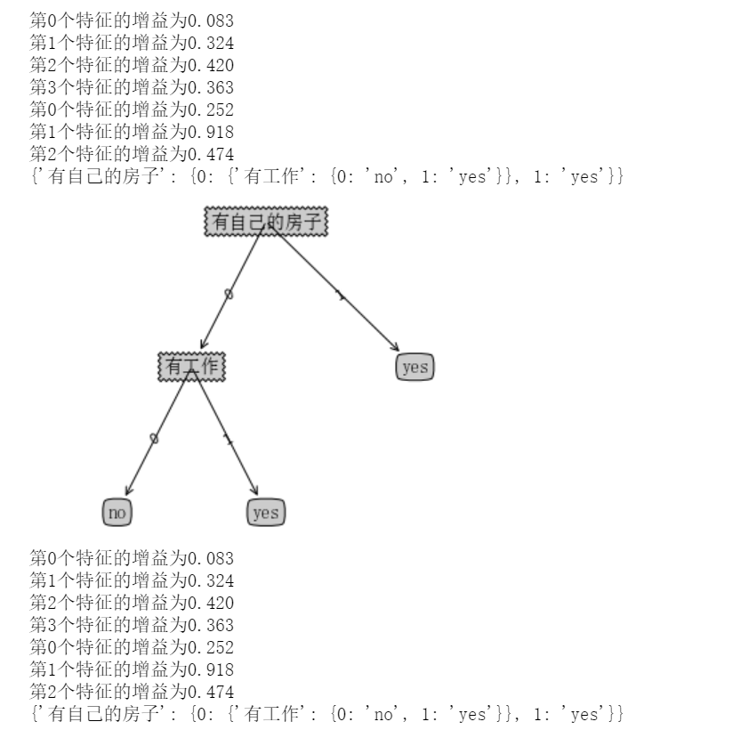
1.10 sklearn.tree.DecisionTreeClassifier
sklearn.tree.DecisionTreeClassifier
1.10.1 参数说明
criterion：特征选择标准，可选参数，默认是gini，可以设置为entropy。gini是基尼不纯度，是将来自集合的某种结果随机应用于某一数据项的预期误差率，是一种基于统计的思想。entropy是香农熵，也就是上篇文章讲过的内容，是一种基于信息论的思想。Sklearn把gini设为默认参数.ID3算法使用的是entropy，CART算法使用的则是gini。
splitter：特征划分点选择标准，可选参数，默认是best，可以设置为random。每个结点的选择策略。best参数是根据算法选择最佳的切分特征，例如gini、entropy。random随机的在部分划分点中找局部最优的划分点。默认的”best”适合样本量不大的时候，而如果样本数据量非常大，此时决策树构建推荐”random”。
max_features：划分时考虑的最大特征数，可选参数，默认是None。寻找最佳切分时考虑的最大特征数(n_features为总共的特征数)，有如下6种情况： - 如果max_features是整型的数，则考虑max_features个特征；
如果max_features是浮点型的数，则考虑int(max_features * n_features)个特征；
如果max_features设为auto，那么max_features = sqrt(n_features)；
如果max_features设为sqrt，那么max_featrues = sqrt(n_features)，跟auto一样；
如果max_features设为log2，那么max_features = log2(n_features)；
如果max_features设为None，那么max_features = n_features，也就是所有特征都用。
一般来说，如果样本特征数不多，比如小于50，我们用默认的”None”就可以了，如果特征数非常多，我们可以灵活使用刚才描述的其他取值来控制划分时考虑的最大特征数，以控制决策树的生成时间。
max_depth：决策树最大深，可选参数，默认是None。这个参数是这是树的层数的。层数的概念就是，比如在贷款的例子中，决策树的层数是2层。如果这个参数设置为None，那么决策树在建立子树的时候不会限制子树的深度。
一般来说，数据少或者特征少的时候可以不管这个值。或者如果设置了min_samples_slipt参数，那么直到少于min_smaples_split个样本为止。如果模型样本量多，特征也多的情况下，推荐限制这个最大深度，具体的取值取决于数据的分布。常用的可以取值10-100之间。
min_samples_split：内部节点再划分所需最小样本数，可选参数，默认是2。这个值限制了子树继续划分的条件。
- 如果min_samples_split为整数，那么在切分内部结点的时候，min_samples_split作为最小的样本数，也就是说，如果样本已经少于min_samples_split个样本，则停止继续切分。如果min_samples_split为浮点数，那么min_samples_split就是一个百分比，ceil(min_samples_split * n_samples)，数是向上取整的。如果样本量不大，不需要管这个值。如果样本量数量级非常大，则推荐增大这个值。
min_weight_fraction_leaf：叶子节点最小的样本权重和，可选参数，默认是0。这个值限制了叶子节点所有样本权重和的最小值，如果小于这个值，则会和兄弟节点一起被剪枝。一般来说，如果我们有较多样本有缺失值，或者分类树样本的分布类别偏差很大，就会引入样本权重，这时我们就要注意这个值了。
max_leaf_nodes：最大叶子节点数，可选参数，默认是None。通过限制最大叶子节点数，可以防止过拟合。如果加了限制，算法会建立在最大叶子节点数内最优的决策树。如果特征不多，可以不考虑这个值，但是如果特征分成多的话，可以加以限制，具体的值可以通过交叉验证得到。
class_weight：类别权重，可选参数，默认是None，也可以字典、字典列表、balanced。指定样本各类别的的权重，主要是为了防止训练集某些类别的样本过多，导致训练的决策树过于偏向这些类别。类别的权重可以通过{class_label：weight}这样的格式给出，这里可以自己指定各个样本的权重，或者用balanced，如果使用balanced，则算法会自己计算权重，样本量少的类别所对应的样本权重会高。当然，如果你的样本类别分布没有明显的偏倚，则可以不管这个参数，选择默认的None。
random_state：可选参数，默认是None。随机数种子。如果是证书，那么random_state会作为随机数生成器的随机数种子。随机数种子，如果没有设置随机数，随机出来的数与当前系统时间有关，每个时刻都是不同的。如果设置了随机数种子，那么相同随机数种子，不同时刻产生的随机数也是相同的。如果是RandomState instance，那么random_state是随机数生成器。如果为None，则随机数生成器使用np.random。
min_impurity_split：节点划分最小不纯度,可选参数，默认是1e-7。这是个阈值，这个值限制了决策树的增长，如果某节点的不纯度(基尼系数，信息增益，均方差，绝对差)小于这个阈值，则该节点不再生成子节点。即为叶子节点 。
presort：数据是否预排序，可选参数，默认为False，这个值是布尔值，默认是False不排序。一般来说，如果样本量少或者限制了一个深度很小的决策树，设置为true可以让划分点选择更加快，决策树建立的更加快。如果样本量太大的话，反而没有什么好处。问题是样本量少的时候，我速度本来就不慢。所以这个值一般懒得理它就可以了。 除了这些参数要注意以外，其他在调参时的注意点有：
当样本数量少但是样本特征非常多的时候，决策树很容易过拟合，一般来说，样本数比特征数多一些会比较容易建立健壮的模型.
如果样本数量少但是样本特征非常多，在拟合决策树模型前，推荐先做维度规约，比如主成分分析（PCA），特征选择（Losso）或者独立成分分析（ICA）。这样特征的维度会大大减小。再来拟合决策树模型效果会好。
推荐多用决策树的可视化，同时先限制决策树的深度，这样可以先观察下生成的决策树里数据的初步拟合情况，然后再决定是否要增加深度。 在训练模型时，注意观察样本的类别情况（主要指分类树），如果类别分布非常不均匀，就要考虑用class_weight来限制模型过于偏向样本多的类别。 决策树的数组使用的是numpy的float32类型，如果训练数据不是这样的格式，算法会先做copy再运行。
如果输入的样本矩阵是稀疏的，推荐在拟合前调用csc_matrix稀疏化，在预测前调用csr_matrix稀疏化。 https://www.cnblogs.com/pinard/p/6056319.html
1.11 总结
决策树的优缺点
首先我们看看决策树算法的优点：
1）简单直观，生成的决策树很直观。
2）基本不需要预处理，不需要提前归一化，处理缺失值。
3）使用决策树预测的代价是O(log2m)。 m为样本数。
4）既可以处理离散值也可以处理连续值。很多算法只是专注于离散值或者连续值。
5）可以处理多维度输出的分类问题。
6）相比于神经网络之类的黑盒分类模型，决策树在逻辑上可以得到很好的解释
7）可以交叉验证的剪枝来选择模型，从而提高泛化能力。
8） 对于异常点的容错能力好，健壮性高。
我们再看看决策树算法的缺点:
1）决策树算法非常容易过拟合，导致泛化能力不强。可以通过设置节点最少样本数量和限制决策树深度来改进。
2）决策树会因为样本发生一点点的改动，就会导致树结构的剧烈改变。这个可以通过集成学习之类的方法解决。
3）寻找最优的决策树是一个NP难的问题，我们一般是通过启发式方法，容易陷入局部最优。可以通过集成学习之类的方法来改善。
4）有些比较复杂的关系，决策树很难学习，比如异或。这个就没有办法了，一般这种关系可以换神经网络分类方法来解决。
5）如果某些特征的样本比例过大，生成决策树容易偏向于这些特征。这个可以通过调节样本权重来改善。cnblog
1.12 分类与回归的区别
分类与回归是两个很接近的问题，分类的目标是根据已知样本的某些特征，判断一个新的样本属于哪种已知的样本类，它的结果是离散值。而回归的结果是连续的值。当然，本质是一样的，都是特征（feature）到结果/标签（label）之间的映射
比如：判断西瓜是好瓜坏瓜，最后只要给出0，1就行了，就是分类问题，是什么 但是要判断西瓜的成熟度：比如0.95，0.21，再比如预测上海黄浦区的2020年房价是多少
1、分类树分析是指预测结果是数据所属的类（比如某个电影去看还是不看） 2、回归树分析是指预测结果可以被认为是实数（例如房屋的价格，或患者在医院中的逗留时间） 而术语分类和回归树（CART，Classification And Regression Tree）分析是用于指代上述两种树的总称，由Breiman等人首先提出
分类树的样本输出（即响应值）是类的形式，比如判断这个救命药是真的还是假的，周末去看电影《风语咒》还是不去。而回归树的样本输出是数值的形式，比如给某人发放房屋贷款的数额就是具体的数值，可以是0到300万元之间的任意值。 所以，对于回归树，你没法再用分类树那套信息增益、信息增益率、基尼系数来判定树的节点分裂了，你需要采取新的方式评估效果，包括预测误差（常用的有均方误差、对数误差等）。而且节点不再是类别，是数值（预测值），那么怎么确定呢？有的是节点内样本均值，有的是最优化算出来的比如Xgboost。
1.13 基本概念辨析
可以参考这篇blog
label：标签是我们要预测的事物，即简单线性回归中的y变量。回归问题中的label标签可以是小麦未来的价格、图片中显示的动物品种、音频剪辑的含义或任何事物。比如分类问题中的好瓜坏瓜，垃圾邮件or非垃圾邮件
特征：特征是输入变量，即简单线性回归中的x变量。简单的机器学习项目可能会使用单个特征，而比较复杂的机器学习项目可能会使用数百万个特征，按如下方式指定：
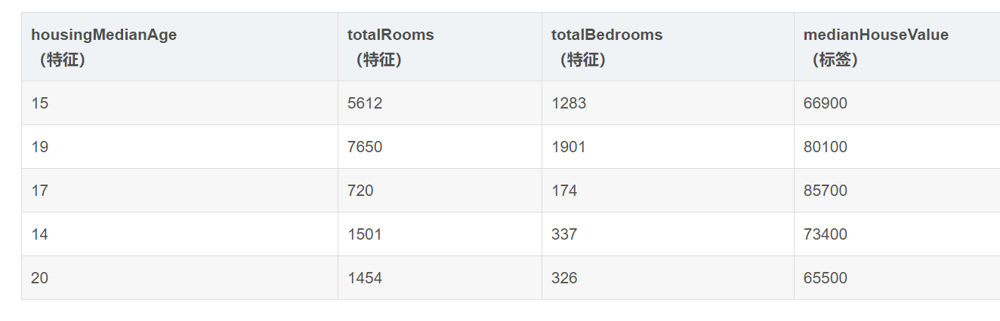
模型:模型定义了特征与标签之间的关系。例如，垃圾邮件检测模型可能会将某些特征与“垃圾邮件”紧密联系起来。我们来重点介绍一下模型生命周期的两个阶段：
训练:是指创建或学习模型。也就是说，向模型展示有标签样本，让模型逐渐学习特征与标签之间的关系。
推断是指将训练后的模型应用于无标签样本。也就是说，使用经过训练的模型做出有用的预测 (y’)。例如，在推断期间，您可以针对新的无标签样本预测 medianHouseValue。
无监督：没label的数据 监督：有label数据 半监督：这个数据集里有label的没label的混在了一起
Chapter 2 RandomForest
随机森林
组合分类器的概念 最终结果由多个分类器的结果投票表决，或者取多个分类器的平均值等。 森林：顾名思义就是树的组合。是bagging的变体，特指基学习器是tree
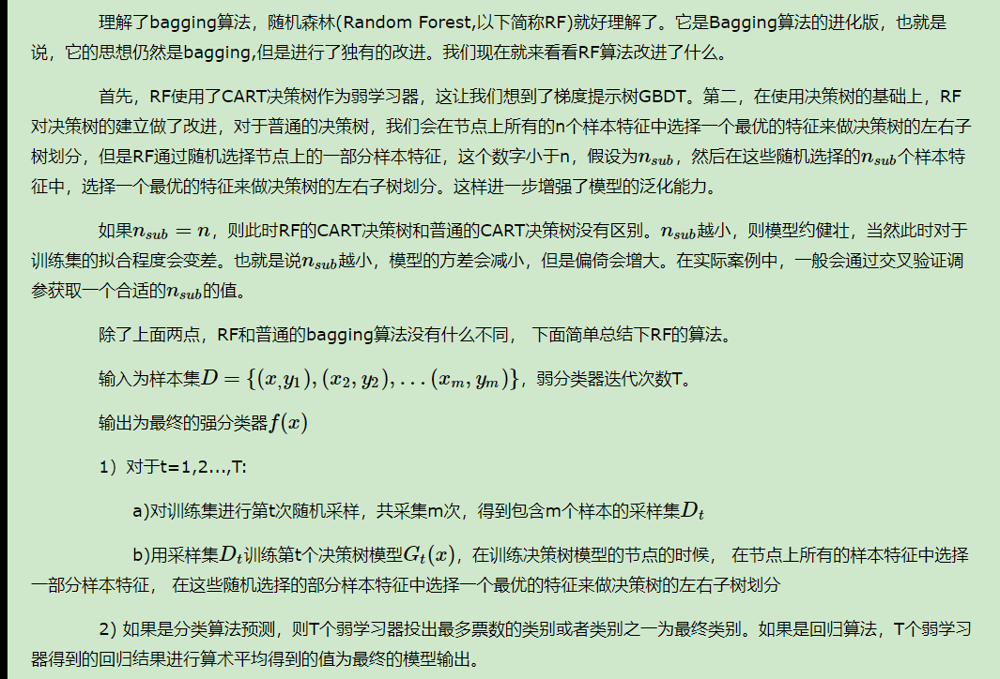
2.1 定义
随机森林是一个典型的多个决策树的组合分类器。主要包括两个方面：数据的随机性选取，以及待选特征的随机选取。
2.1.1 数据的随机性选取
从原始的数据集中采取有放回的抽样（bootstrap），构造子数据集，子数据集的数据量是和原始数据集相同的。不同子数据集的元素可以重复，同一个子数据集中的元素也可以重复。
利用子数据集来构建子决策树，将这个数据放到每个子决策树中，每个子决策树输出一个结果。最后，如果有了新的数据需要通过随机森林得到分类结果，就可以通过对子决策树的判断结果的投票，得到随机森林的输出结果了。属于哪类的结果多，就归为哪一类
假设随机森林中有3棵子决策树，2棵子树的分类结果是A类，1棵子树的分类结果是B类，那么随机森林的分类结果就是A类
2.1.2 待选特征的随机选取：
与数据集的随机选取类似，随机森林中的子树的每一个分裂过程并未用到所有的待选特征，而是从所有的待选特征中随机选取一定的特征，之后再在随机选取的特征中选取最优的特征。这样能够使得随机森林中的决策树都能够彼此不同，提升系统的多样性，从而提升分类性能
这里我还是不太明白好处，哈哈
2.2 构造过程
机森林的构造过程：
1. 假如有N个样本，则有放回的随机选择N个样本(每次随机选择一个样本，然后返回继续选择)。这选择好了的N个样本用来训练一个决策树，作为决策树根节点处的样本。
2. 当每个样本有M个属性时，在决策树的每个节点需要分裂时，随机从这M个属性中选取出m个属性，满足条件m << M。然后从这m个属性中采用某种策略（比如说信息增益）来选择1个属性作为该节点的分裂属性。
3. 决策树形成过程中每个节点都要按照步骤2来分裂（很容易理解，如果下一次该节点选出来的那一个属性是刚刚其父节点分裂时用过的属性，则该节点已经达到了叶子节点，无须继续分裂了）。一直到不能够再分裂为止。注意整个决策树形成过程中没有进行剪枝。
4. 按照步骤1~3建立大量的决策树，这样就构成了随机森林了。【zhihu】
2.3 特点
在数据集上表现良好，两个随机性的引入，使得随机森林不容易陷入过拟合 训练速度快，可以得到变量重要性排序（两种：基于OOB误分率的增加量和基于分裂时的GINI下降量 它能够处理很高维度（feature很多）的数据，并且不用做特征选择，对数据集的适应能力强：既能处理离散型数据，也能处理连续型数据，数据集无需规范化 训练速度快，可以得到变量重要性排序（两种：基于OOB误分率的增加量和基于分裂时的GINI下降量
随机森林（random forest）是一种利用多个分类树对数据进行判别与分类的方法，它在对数据进行分类的同时，还可以给出各个变量（基因）的重要性评分，评估各个变量在分类中所起的作用
RF在bagging的基础上增加了随机抽样和随机特征抽样
RF的主要优点有：
1） 训练可以高度并行化，对于大数据时代的大样本训练速度有优势。个人觉得这是的最主要的优点。
2） 由于可以随机选择决策树节点划分特征，这样在样本特征维度很高的时候，仍然能高效的训练模型。
3） 在训练后，可以给出各个特征对于输出的重要性
4） 由于采用了随机采样，训练出的模型的方差小，泛化能力强。
5） 相对于Boosting系列的Adaboost和GBDT， RF实现比较简单。
6） 对部分特征缺失不敏感。
RF的主要缺点有：
1）在某些噪音比较大的样本集上，RF模型容易陷入过拟合。
2) 取值划分比较多的特征容易对RF的决策产生更大的影响，从而影响拟合的模型的效果。 ## RandomForestRegressor 随机回归树
sklearn.ensemble.RandomForestRegressor
2.3.1 参数
n_estimators:integer, optional (default=100) The number of trees in the forest.最大弱学习器的个数,注意和boosting参数的区别哦 random_state：int, RandomState instance or None, optional (default=None) Controls both the randomness of the bootstrapping of the samples used when building trees (if bootstrap=True) and the sampling of the features to consider when looking for the best split at each node (if max_features < n_features) oob_score :即是否采用袋外样本来评估模型的好坏。默认识False。个人推荐设置为True，因为袋外分数反应了一个模型拟合后的泛化能力。
** criterion**: 即CART树做划分时对特征的评价标准。分类模型和回归模型的损失函数是不一样的。分类RF对应的CART分类树默认是基尼系数gini,另一个可选择的标准是信息增益。回归RF对应的CART回归树默认是均方差mse，另一个可以选择的标准是绝对值差mae。一般来说选择默认的标准就已经很好的。
决策树调参 max_features: RF划分时考虑的最大特征数。可以使用很多种类型的值，默认是“None”,意味着划分时考虑所有的特征数；如果是“log2”意味着划分时最多考虑log2N个特征；如果是“sqrt”或者“auto”意味着划分时最多考虑N−−√N个特征。如果是整数，代表考虑的特征绝对数。如果是浮点数，代表考虑特征百分比，即考虑（百分比xN）取整后的特征数，其中N为样本总特征数。一般来说，如果样本特征数不多，比如小于50，我们用默认的“None”就可以了，如果特征数非常多，我们可以灵活使用刚才描述的其他取值来控制划分时考虑的最大特征数，以控制决策树的生成时间。
max_depth: 决策树最大深度。默认为“None”，决策树在建立子树的时候不会限制子树的深度这样建树时，会使每一个叶节点只有一个类别，或是达到min_samples_split。一般来说，数据少或者特征少的时候可以不管这个值。如果模型样本量多，特征也多的情况下，推荐限制这个最大深度，具体的取值取决于数据的分布。常用的可以取值10-100之间。 min_samples_split: 内部节点再划分所需最小样本数，默认2。这个值限制了子树继续划分的条件，如果某节点的样本数少于min_samples_split，则不会继续再尝试选择最优特征来进行划分。 默认是2.如果样本量不大，不需要管这个值。如果样本量数量级非常大，则推荐增大这个值。
min_samples_leaf:叶子节点最少样本数。 这个值限制了叶子节点最少的样本数，如果某叶子节点数目小于样本数，则会和兄弟节点一起被剪枝。 默认是1,可以输入最少的样本数的整数，或者最少样本数占样本总数的百分比。如果样本量不大，不需要管这个值。如果样本量数量级非常大，则推荐增大这个值。
min_weight_fraction_leaf：叶子节点最小的样本权重和。这个值限制了叶子节点所有样本权重和的最小值，如果小于这个值，则会和兄弟节点一起被剪枝。 默认是0，就是不考虑权重问题。一般来说，如果我们有较多样本有缺失值，或者分类树样本的分布类别偏差很大，就会引入样本权重，这时我们就要注意这个值了。
max_leaf_nodes: 最大叶子节点数。通过限制最大叶子节点数，可以防止过拟合，默认是“None”，即不限制最大的叶子节点数。如果加了限制，算法会建立在最大叶子节点数内最优的决策树。如果特征不多，可以不考虑这个值，但是如果特征分成多的话，可以加以限制，具体的值可以通过交叉验证得到。
min_impurity_split: 节点划分最小不纯度。这个值限制了决策树的增长，如果某节点的不纯度(基于基尼系数，均方差)小于这个阈值，则该节点不再生成子节点，即为叶子节点 。一般不推荐改动默认值1e-7
# Import RandomForestRegressor
from sklearn.ensemble import RandomForestRegressor
# Instantiate rf
rf = RandomForestRegressor(n_estimators=25,
random_state=2)
# Fit rf to the training set
rf.fit(X_train ,y_train)
# Import mean_squared_error as MSE
from sklearn.metrics import mean_squared_error as MSE
# Predict the test set labels
y_pred = rf.predict(X_test)
# Evaluate the test set RMSE
rmse_test = MSE(y_test, y_pred)**(1/2)
# Print rmse_test
print('Test set RMSE of rf: {:.2f}'.format(rmse_test))
<script.py> output:
Test set RMSE of rf: 51.972.4 随机分类树
RandomForestClassifier 可以直接查看官方文档 与随机森林回归树是一致
2.5 调参实例
# Define the dictionary 'params_rf'
params_rf = {
'n_estimators': [100, 350, 500],
'max_features': ['log2', 'auto', 'sqrt'],
'min_samples_leaf': [2, 10, 30],
}
# Import GridSearchCV
from sklearn.model_selection import GridSearchCV
# Instantiate grid_rf
grid_rf = GridSearchCV(estimator=rf,
param_grid=params_rf,
scoring='neg_mean_squared_error',
cv=3,
verbose=1,
n_jobs=-1)
# Import mean_squared_error from sklearn.metrics as MSE
from sklearn.metrics import mean_squared_error as MSE
# Extract the best estimator
best_model = grid_rf.best_estimator_
# Predict test set labels
y_pred = best_model.predict(X_test)
# Compute rmse_test
rmse_test = MSE(y_test, y_pred)**(1/2)
# Print rmse_test
print('Test RMSE of best model: {:.3f}'.format(rmse_test))
<script.py> output:
Test RMSE of best model: 50.569Chapter 3 Bagging
集成学习通过构建并结合多个学习器来完成学习任务，也叫多分类器系统。
其基学习器可以是树，也可以还是其他分类or回归模型 是并行集成学习的代表
集成学习 - 同质集成：同类型的学习器 - 异质集成：不同类型的学习器
集成学习通过多个学习器进行结合，经常可以获得比单一学习器显著的优越的泛化性能。这对“弱学习器”尤为明显，因此集成学习很多都是针对弱学习器的。
一般来说，集成学习的结果通过“投票产生”及少数服从多数。个体的学习器要有一定的”准确性“即不能太坏，并且具有一定的多样性，即学习器之间具有差异性。但是个体学习器的“准确性”和“多样性”本身就存在冲突 >准确性很高之后要增加多样性就要牺牲准确性，事实上如何产生“好而不同”的个体学习器，正是集成学学习研究的核心。
bagging对于弱学习器没有限制，这和Adaboost一样。但是最常用的一般也是决策树和神经网络
3.2 包外估计
通过自助采样，初始化数据集D中约有36.8%的样本未出现在采样数据集D’中，于是将D’用作训练集，将随机抽取的样本作为测试集
当基学习器是决策树时，可以使用包外样本来辅助剪枝
当基学习器是神经网络时，可使用包外样本来辅助早期停止以减小过拟合的风险简书
3.3 推导
bagging通常对分类任务使用简单投票法，对回归任务中使用简单平均法。
输入 训练集\(D=\left\{\left(\boldsymbol{x}_{1}, y_{1}\right),\left(\boldsymbol{x}_{2}, y_{2}\right), \ldots,\left(\boldsymbol{x}_{m}, y_{m}\right)\right\}\)
基学习算法：\(\mathcal{L}\)
训练次数：\(T\)
过程 for \(t=1,2, \dots, T \mathrm{do}\) \(h_{t}=\mathfrak{L}\left(D, \mathcal{D}_{b s}\right)\) end for 输出 \(H(\boldsymbol{x})=\underset{y \in \mathcal{Y}}{\arg \max } \sum_{t=1}^{T} \mathbb{I}\left(h_{t}(\boldsymbol{x})=y\right)\)
若在分类的过程中，出现两个类出现相同的票数，最简单的就是随机选一个。
3.5 实现描述
在scikit-learn中， 参数 max_samples 和 max_features 控制子集的大小（在样本和特征方面） 参数 bootstrap 和 bootstrap_features 控制是否在有或没有替换的情况下绘制样本和特征。
Bagging又叫自助聚集，是一种根据均匀概率分布从数据中重复抽样（有放回）的技术。 每个抽样生成的自助样本集上，训练一个基分类器；对训练过的分类器进行投票，将测试样本指派到得票最高的类中。 每个自助样本集都和原数据一样大 有放回抽样，一些样本可能在同一训练集中出现多次，一些可能被忽略。 csdn
周志华的西瓜书是有这部分的
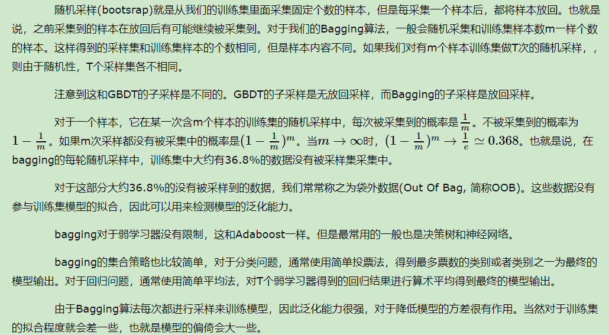
3.6 评价
Bagging通过降低基分类器的方差，改善了泛化误差 其性能依赖于基分类器的稳定性；如果基分类器不稳定，bagging有助于降低训练数据的随机波动导致的误差；如果稳定，则集成分类器的误差主要由基分类器的偏倚引起 由于每个样本被选中的概率相同，因此bagging并不侧重于训练数据集中的任何特定实例
3.7 BaggingClassifier参数
base_estimator：Object or None。None代表默认是DecisionTree，Object可以指定基估计器（base estimator）。
n_estimators：int, optional (default=10) 。 要集成的基估计器的个数。
max_samples： int or float, optional (default=1.0)。决定从x_train抽取去训练基估计器的样本数量。int 代表抽取数量，float代表抽取比例
max_features : int or float, optional (default=1.0)。决定从x_train抽取去训练基估计器的特征数量。int 代表抽取数量，float代表抽取比例
bootstrap : boolean, optional (default=True) 决定样本子集的抽样方式（有放回和不放回）
bootstrap_features : boolean, optional (default=False)决定特征子集的抽样方式（有放回和不放回）
oob_score : bool 决定是否使用包外估计（out of bag estimate）泛化误差
warm_start : bool, optional (default=False) true代表
n_jobs : int, optional (default=1)
random_state : int, RandomState instance or None, optional (default=None)。如果int，random_state是随机数生成器使用的种子; 如果RandomState的实例，random_state是随机数生成器; 如果None，则随机数生成器是由np.random使用的RandomState实例。
verbose : int, optional (default=0)
3.8 属性
estimators_ : list of estimators。The collection of fitted sub-estimators.查看分类器
estimators_samples_ : list of arrays分类器样本
estimators_features_ : list of arrays
oob_score_ : float，使用包外估计这个训练数据集的得分。
oob_prediction_ : array of shape = [n_samples]。在训练集上用out-of-bag估计计算的预测。 如果n_estimator很小，则可能在抽样过程中数据点不会被忽略。 在这种情况下，oob_prediction_可能包含NaN。
这个栗子是datacamp上面的一个小demo
# Import DecisionTreeClassifier
from sklearn.tree import DecisionTreeClassifier
# Import BaggingClassifier
from sklearn.ensemble import BaggingClassifier
# Instantiate dt
dt = DecisionTreeClassifier(random_state=1)
# Instantiate bc
bc = BaggingClassifier(base_estimator=dt, n_estimators=50, random_state=1)
# Fit bc to the training set
bc.fit(X_train, y_train)
# Predict test set labels
y_pred = bc.predict(X_test)
# Evaluate acc_test
acc_test = accuracy_score(y_test, y_pred)
print('Test set accuracy of bc: {:.2f}'.format(acc_test))
<script.py> output:
Test set accuracy of bc: 0.713.9 Out of Bag Evaluation
使用包外估计进行数据集的划分
# Import DecisionTreeClassifier
from sklearn.tree import DecisionTreeClassifier
# Import BaggingClassifier
from sklearn.ensemble import BaggingClassifier
# Instantiate dt
dt = DecisionTreeClassifier(min_samples_leaf=8, random_state=1)
# Instantiate bc
bc = BaggingClassifier(base_estimator=dt,
n_estimators=50,
oob_score=True,
random_state=1)
# Fit bc to the training set
bc.fit(X_train, y_train)
# Predict test set labels
y_pred = bc.predict(X_test)
# Evaluate test set accuracy
acc_test = accuracy_score(y_test, y_pred)
# Evaluate OOB accuracy
acc_oob = bc.oob_score_
# Print acc_test and acc_oob
print('Test set accuracy: {:.3f}, OOB accuracy: {:.3f}'.format(acc_test, acc_oob))
<script.py> output:
Test set accuracy: 0.698, OOB accuracy: 0.7043.10 集成学习分类
- 个体学习器间存在强依赖关系，必须串行生成的序列化方法
后面弱分类器的训练是依赖于强分类器的
boosting
个体学习器之间不存在强依赖关系，可同时生成的并行化方法
- bagging和随机森林
从bias-variance角度讲，bagging主要关注降低方差，因为它不在剪枝决策树，神经网络等易受样本扰动的学习器上效用更为明显。
这句不太严谨
3.11 RF vs Bagging
- 随机森林简单，容易实现随机森林对bagging只是做了小的改动，但是与bagging中基学习器的“多样性”仅通过样本扰动(通过对初始训练集采样)而来不同，随机森林中基学习器的多样性不仅来自样本扰动，还来自属性扰动，这就使得最终集成学习的泛化性能可通过个体学习器之间差异度增加而进一步提升。
因此总结为RF基于样本采样和属性采用优于bagging仅通过样本采样。
在个体决策树的构建过程中，bagging使用的是“确定性”决策树，在选择划分属性的时候要对结点的所有属性进行考察，而随机森林使用的是“随机型”决策树，只需考察一个属性
3.12 特点
平行合奏：每个模型独立构建
旨在减少方差，而不是偏差（因此很可能存在过拟合）
适用于高方差低偏差模型（复杂模型）
基于树的方法的示例是随机森林，其开发完全生长的树（注意，RF修改生长的过程以减少树之间的相关性）
Chapter 4 Boosting
Boosting是一族可将弱学习器提升为强学习器的算法，其工作机制类似先从初始训练集训练一个基学习器，再根据基学习器的表现对训练样本分布进行调整，使得先前基学习器做错的样本在后续受到更多的关注，然后基于调整后的样本分布来训练下一个基学习器，如此重复进行，直至基学习器数目达到事先指定的值T,最终将这T个基学习器进行加权。
代表 - Adaboost
4.1 重赋权
- boosting算法要求基学习器能对特定的数据分布进行学习，可以通过“重赋权法”实施，即在每一轮训练中，根据样本的基学习算法，根据样本分布为每个训练重新赋一个权重。
4.2 重采样
对于无法接受带权样本的基学习算法，则可通过重采样法进行处理，即在每一轮的学习中，根据样本分布对训练集进行重新采样，再用重采样而得的样本集对基学习器进行训练
boosting在训练的每一轮都要检查当前生成的基学习器是否满足基本条件，否则抛弃。
从bias-variance角度看，boosting主要关注降低偏差，因此boosting能基于泛化性能相当弱的学习器构建出很强的集成
Bagging + 决策树 = 随机森林 AdaBoost + 决策树 = 提升树 Gradient Boosting + 决策树 = GBDT
总结一下bagging和boosting的区别与联系
总体来说都是集成的思想 不同的是bagging的多个学习器并行分类，最后采取投票原则，觉得决定分类 boosting是一种串行的弱分类器训练，不断的训练被分错的样本，增加弱分类器个数，最后组成一个强分类器。 不可以并行哦。
4.3 boosting与bagging的区别
所谓集成学习，是指构建多个分类器（弱分类器）对数据集进行预测，然后用某种策略将多个分类器预测的结果集成起来，作为最终预测结果。通俗比喻就是“三个臭皮匠赛过诸葛亮”，或一个公司董事会上的各董事投票决策，它要求每个弱分类器具备一定的“准确性”，分类器之间具备“差异性”。
集成学习根据各个弱分类器之间有无依赖关系，分为Boosting和Bagging两大流派： Boosting流派，各分类器之间有依赖关系，必须串行，比如Adaboost、GBDT(Gradient Boosting Decision Tree)、Xgboost Bagging流派，各分类器之间没有依赖关系，可各自并行，比如随机森林（Random Forest）
Chapter 5 AdaBoost
自适应增强提升算法 一般是二分类算法
AdaBoost全称为AdaptiveBoosting:自适应提升算法；虽然名字听起来给人一种高大上的感觉，但其实背后的原理并不难理解。什么叫做自适应，就是这个算法可以在不同的数据集上都适用,这个基本和废话一样,一个算法肯定要能适应不同的数据集。
提升方法是指:分类问题中，通过改变训练样本的权重，学习多个分类器，并将这些分类器进行线性组合，提高分类器的性能。 利用前一轮迭代弱学习器的误差率来更新训练集的权重，这样一轮轮的迭代下去
但是标准的adaboost只适用于二分类任务。
5.1 boosting过程
Boosting分类方法，其过程如下所示：
1.先通过对N个训练数据的学习得到第一个弱分类器h1；
2.将h1分错的数据和其他的新数据一起构成一个新的有N个训练数据的样本，通过对这个样本的学习得到第二个弱分类器h2；
3.将h1和h2都分错了的数据加上其他的新数据构成另一个新的有N个训练数据的样本，通过对这个样本的学习得到第三个弱分类器h3；
4.最终经过提升的强分类器h_final=Majority Vote(h1,h2,h3)。即某个数据被分为哪一类要通过h1,h2,h3的多数表决。 上述Boosting算法，存在两个问题：
如何调整训练集，使得在训练集上训练弱分类器得以进行。 如何将训练得到的各个弱分类器联合起来形成强分类器。
针对以上两个问题，AdaBoost算法进行了调整：
1.使用加权后选取的训练数据代替随机选取的训练数据，这样将训练的焦点集中在比较难分的训练数据上。
2.将弱分类器联合起来时，使用加权的投票机制代替平均投票机制。让分类效果好的弱分类器具有较大的权重，而分类效果差的分类器具有较小的权重。
这个很好理解:smile:
5.2 推导
训练数据：\(T=\left\{\left(x_{1}, y_{1}\right),\left(x_{2}, y_{2}\right), \ldots\left(x_{n}, y_{n}\right)\right\}\)，其中\(x_{i} \in \chi \subseteq R^{n}\)，\(y \in Y\{-1,+1\}\)，最后需要得到分类器：\(G(x)=\sum_{m=1}^{M} a_{m} G_{m}(x)\)，其中 $m $为分类器的个数，每一次训练我们都获得一个基分类器 \(G_{i}(x)\),\(a_i\) 是每个基训练器的权重，也就是说每个基分类器说话的分量。我们看最后的分类器，他就是结合多个不同基分类器的意见，集百家之长，最终输出结果。
5.3 权重
Adaboost训练过程中有两个权重，一个是怎加被分错训练样本的权重，另一个就是增加误差比较小的弱分类器的权重。 针对为何要提高被分错样本的权重，可以参考cnblog
个人感觉就是，Adaboost的最终目的是给误差较小的弱分类器的赋加大的权重基于此构造一个强分类器，但在训练基分类器的过程中会增加没被分类正确的样本的权重，使其在下一轮训练中继续分，若分对了则总的loss会减小，此时进行下一轮弱分类器的训练。
这样总结一下思路会比较清晰就是很罗嗦，嘿嘿，表达有待提高。。
5.4 加法模型
就是增加一个前一轮的弱分类器已经变成了强分类器，那在本轮训练中只考虑当前训练的弱分类器能否使loss减小即可。
也就是一个函数（模型）是由多个函数（模型）累加起来的\(f(x)=\sum_{m=1}^{M} \beta_{m} b\left(x ; \gamma_{m}\right)\)
其中 \(\beta_{m}\)是每个基函数的系数， \(\gamma_{m}\) 是每个基函数的参数， \(b\left(x ; \gamma_{m}\right)\) 就是一个基函数了
假设一个基函数为 \(e^{ax}\) ，那么一个加法模型就可以写成: \(f(x)=e^{x}+2 e^{2 x}-2 e^{x / 2}\)
5.5 前向分步算法
在给定训练数据以及损失函数 \(L(y,f(x))\) 的情况下，加法模型的经验风险最小化即损失函数极小化问题如下: \(\min _{\beta_{m}, \gamma_{m}} \sum_{i=1}^{N} L\left(y_{i}, \sum_{m=1}^{N} \beta_{m} b\left(x ; \gamma_{m}\right)\right)\)
这个问题直接优化比较困难，前向分步算法解决这个问题的思想如下:由于我们最终的分类器其实加法模型，所以我们可以从前向后考虑，每增加一个基分类器，就使损失函数\(L(y,f(x))\)的值更小一点，逐步的逼近最优解。这样考虑的话，每一次计算损失函数的时候，我们只需要考虑当前基分类器的系数和参数，同时此次之前基分类器的系数和参数不受此次的影响。算法的思想有点类似梯度下降，每一次都向最优解移动一点
步骤
输入训练数据：\(T=\left\{\left(x_{1}, y_{1}\right),\left(x_{2}, y_{2}\right), \ldots\left(x_{n}, y_{n}\right)\right\}\)，其中\(x_{i} \in \chi \subseteq R^{n}\)，\(y \in Y\{-1,+1\}\)，最后需要得到分类器\(G(X)\)
初始化训练值的权值分布
\(D_{1}=\left(w_{1 i}, w_{2 i}, \ldots, w_{1 N}\right) ，w_{1 i}=\frac{1}{N}\)
对于\(m=1,2,...,M\) a使用具有权值分布 \(D_{m} 的训练数据集学习，得到基本分类器\)G_{m}(x)$ 。
b计算 \(G_{m}(x)\)在训练集上的分类误差率
\(e_{m}=\sum_{i=1}^{N} w_{m i} I\left\{y_{i} \neq G_{m}\left(x_{i}\right)\right\}\)
c计算 \(G_{m}(x)\)的系数 \(\alpha_{m}=\frac{1}{2} \log \frac{1-e_{m}}{e_{m}}\)
d根据前m-1 次得到的结果，更新权值: \(w_{m=1, i}=\frac{w_{m i} e^{-y_{i} \alpha_{m} G_{m}\left(x_{i}\right)}}{Z_{m}}\)
其中 \(Z_{m}=\sum_{i=1}^{N} w_{m i} e^{-y_{i} \alpha_{m} G_{m}\left(x_{i}\right)}\),是一个规范化因子，用于归一化
构建最终的分类器 \(f(x)=\sum_{m=1}^{M} a_{m} G_{m}(x)\) \(G(x)=\operatorname{sign}(f(x))\)
5.6 Adaboost的数据权重
如果训练数据保持不变，那么在数据的某个特定维度上单层决策树找到的最佳决策点每一次必然都是一样的，为什么呢？因为单层决策树是把所有可能的决策点都找了一遍然后选择了最好的，如果训练数据不变，那么每次找到的最好的点当然都是同一个点了。 所以，这里Adaboost数据权重就派上用场了，所谓“数据的权重主要用于弱分类器寻找其分类误差最小的点”，其实，在单层决策树计算误差时，Adaboost要求其乘上权重，即计算带权重的误差。
举个例子，在以前没有权重时（其实是平局权重时），一共10个点时，对应每个点的权重都是0.1，分错1个，错误率就加0.1；分错3个，错误率就是0.3。现在，每个点的权重不一样了，还是10个点，权重依次是[0.01,0.01,0.01,0.01,0.01,0.01, 0.01,0.01,0.01,0.91]，如果分错了第1一个点，那么错误率是0.01，如果分错了第3个点，那么错误率是0.01，要是分错了最后一个点，那么错误率就是0.91。这样，在选择决策点的时候自然是要尽量把权重大的点（本例中是最后一个点）分对才能降低误差率。由此可见，权重分布影响着单层决策树决策点的选择，权重大的点得到更多的关注，权重小的点得到更少的关注。
在Adaboost算法中，每训练完一个弱分类器都就会调整权重，上一轮训练中被误分类的点的权重会增加，在本轮训练中，由于权重影响，本轮的弱分类器将更有可能把上一轮的误分类点分对，如果还是没有分对，那么分错的点的权重将继续增加，下一个弱分类器将更加关注这个点，尽量将其分对。
这一点也说明Adaboost对异常值会很敏感，因此对剔除异常值的需求比较大
这样，达到“你分不对的我来分”，下一个分类器主要关注上一个分类器没分对的点，每个分类器都各有侧重。
5.7 Adaboost分类器的权重
由于Adaboost中若干个分类器的关系是第N个分类器更可能分对第N-1个分类器没分对的数据，而不能保证以前分对的数据也能同时分对。所以在Adaboost中，每个弱分类器都有各自最关注的点，每个弱分类器都只关注整个数据集的中一部分数据，所以它们必然是共同组合在一起才能发挥出作用。所以最终投票表决时，需要根据弱分类器的权重来进行加权投票，权重大小是根据弱分类器的分类错误率计算得出的，总的规律就是弱分类器错误率越低，其权重就越高。原理
5.8 优劣
Adaboost的主要优点有：
- Adaboost作为分类器时，分类精度很高
- 在Adaboost的框架下，可以使用各种回归分类模型来构建弱学习器，非常灵活。
- 作为简单的二元分类器时，构造简单，结果可理解。
- 不容易发生过拟合
- Adaboost的主要缺点有：
- 对异常样本敏感，异常样本在迭代中可能会获得较高的权重，影响最终的强学习器的预测准确性。
Adaboost有分类树和回归树两种。回归树就是以CART作为基分类器
5.9 boosting与adaboost的关系
提升树和AdaBoost之间的关系就好像编程语言中对象和类的关系，一个类可以生成多个不同的对象。提升树就是AdaBoost算法中基分类器选取决策树桩得到的算法。
用于分类的决策树主要有利用ID3和C4.5两种算法，我们选取任意一种算法，生成只有一层的决策树，即为决策树桩。
5.10 残差树
我们可以看到AdaBoost和提升树都是针对分类问题，如果是回归问题，上面的方法就不奏效了；而残差树则是针对回归问题的一种提升方法。其基学习器是基于CART算法的回归树，模型依旧为加法模型、损失函数为平方函数、学习算法为前向分步算法。
5.11 复现
参数 base_estimator：基分类器，默认是决策树，在该分类器基础上进行boosting，理论上可以是任意一个分类器，但是如果是其他分类器时需要指明样本权重
n_estimators:基分类器提升（循环）次数，默认是50次，这个值过大，模型容易过拟合；值过小，模型容易欠拟合。
learning_rate:学习率，表示梯度收敛速度，默认为1，如果过大，容易错过最优值，如果过小，则收敛速度会很慢；该值需要和n_estimators进行一个权衡，当分类器迭代次数较少时，学习率可以小一些，当迭代次数较多时，学习率可以适当放大。
algorithm:boosting算法，也就是模型提升准则，有两种方式SAMME, 和SAMME.R两种，默认是SAMME.R，两者的区别主要是弱学习器权重的度量，前者是对样本集预测错误的概率进行划分的，后者是对样本集的预测错误的比例，即错分率进行划分的，默认是用的SAMME.R。
random_state:随机种子设置。
5.11.1 属性
estimators_:以列表的形式返回所有的分类器。
classes_:类别标签
estimator_weights_:每个分类器权重
estimator_errors_:每个分类器的错分率，与分类器权重相对应。
feature_importances_:特征重要性，这个参数使用前提是基分类器也支持这个属性。
关于Adaboost模型本身的参数并不多，但是我们在实际中除了调整Adaboost模型参数外，还可以调整基分类器的参数，关于基分类的调参，和单模型的调参是完全一样的，比如默认的基分类器是决策树，那么这个分类器的调参和我们之前的Sklearn参数详解——决策树是完全一致。
方法 decision_function(X):返回决策函数值（比如svm中的决策距离）
fit(X,Y):在数据集（X,Y）上训练模型。
get_parms():获取模型参数
predict(X):预测数据集X的结果。
predict_log_proba(X):预测数据集X的对数概率。
predict_proba(X):预测数据集X的概率值。
score(X,Y):输出数据集（X,Y）在模型上的准确率。
staged_decision_function(X):返回每个基分类器的决策函数值
staged_predict(X):返回每个基分类器的预测数据集X的结果。
staged_predict_proba(X):返回每个基分类器的预测数据集X的概率结果。
staged_score(X, Y):返回每个基分类器的预测准确率。
datacamp的栗子
# Import DecisionTreeClassifier
from sklearn.tree import DecisionTreeClassifier
# Import AdaBoostClassifier
from sklearn.ensemble import AdaBoostClassifier
# Instantiate dt
dt = DecisionTreeClassifier(max_depth=2, random_state=1)
# Instantiate ada
ada = AdaBoostClassifier(base_estimator=dt, n_estimators=180, random_state=1)
# Fit ada to the training set
ada.fit(X_train, y_train)
# Compute the probabilities of obtaining the positive class
y_pred_proba = ada.predict_proba(X_test)[:,1]
# Import roc_auc_score
from sklearn.metrics import roc_auc_score
# Evaluate test-set roc_auc_score
ada_roc_auc = roc_auc_score(y_test, y_pred_proba)
# Print roc_auc_score
print('ROC AUC score: {:.2f}'.format(ada_roc_auc))
<script.py> output:
ROC AUC score: 0.71Chapter 6 Gradient Boost Decision Tree
梯度增强决策树 GBDT的子采样是无放回采样，而Bagging的子采样是放回采样
6.1 定义
哈哈，偷个懒，mathpix这个月的免费次数用完了。。
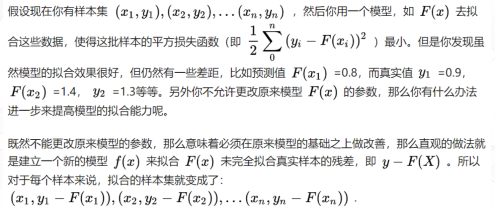
图片来源知乎 GBDT的含义就是用Gradient Boosting的策略训练出来的DT模型。模型的结果是一组回归分类树组合(CART Tree Ensemble)：\(T_1...T_K\) 。其中 \(T_j\) 学习的是之前 \(j-1\)棵树预测结果的残差，这种思想就像准备考试前的复习，先做一遍习题册，然后把做错的题目挑出来，在做一次，然后把做错的题目挑出来在做一次，经过反复多轮训练，取得最好的成绩。知乎
目前我的理解就是：先随机抽取一些样本进行训练，得到一个基分类器，然后再次训练拟合模型的残差。一轮一轮进行迭代直到模型的残差很小了 残差的定义：\(y_{真实}-y_{预测}\)，前一个基分类器未能拟合的部分也就是残差，于是新分类器继续拟合，直到残差达到指定的阈值。
在GBDT的迭代中，假设我们前一轮迭代得到的强学习器是\(f_{t−1}(x)\), 损失函数是\(L(y,f_{t−1}(x))\), 我们本轮迭代的目标是找到一个CART回归树模型的弱学习器\(h_{t(x)}\)，让本轮的损失函数L(y,\({t(x)}=L(y,f_{t−1}(x))+h_{t(x)}\)最小。也就是说，本轮迭代找到决策树，要让样本的损失尽量变得更小。
6.2 梯度下降
GBDT的基本思路就是不断地拟合残差，但是没有解决损失函数拟合方法的问题。针对这个问题，大牛Freidman提出了用损失函数的负梯度来拟合本轮损失的近似值，进而拟合一个CART回归树。第t轮的第i个样本的损失函数的负梯度表示为
\[r_{t i}=-\left[\frac{\left.\partial L\left(y_{i}, f\left(x_{i}\right)\right)\right)}{\partial f\left(x_{i}\right)}\right]_{f(x)=f_{t-1}(x)}\]
负梯度就是残差，哈哈哈
利用\(\left(x_{i}, r_{t i}\right)(i=1,2, \dots m)\),我们可以拟合一颗CART回归树，得到了第t颗回归树，其对应的叶节点区域\(R_{t j}, j=1,2, \ldots, J\)。其中J为叶子节点的个数 。 针对每一个叶子节点里的样本，我们求出使损失函数最小，也就是拟合叶子节点最好的的输出值\(c_{t j}\)如下： \[c_{t j}=\underbrace{\arg \min }_{c} \sum_{x_{i} \in R_{t j}} L\left(y_{i}, f_{t-1}\left(x_{i}\right)+c\right)\]
这样我们就得到了本轮的决策树拟合函数如下： \[h_{t}(x)=\sum_{j=1}^{J} c_{t j} I\left(x \in R_{t j}\right)\]
从而本轮最终得到的强学习器的表达式如下： \[f_{t}(x)=f_{t-1}(x)+\sum_{j=1}^{J} c_{t j} I\left(x \in R_{t j}\right)\]
6.3 GBDT回归
思想是一样的
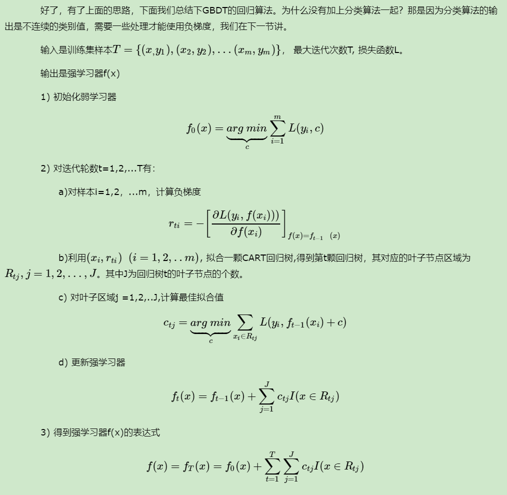 liu
举个栗子 预测一家人谁是谁
可以先按照age划分男女得到一个分数
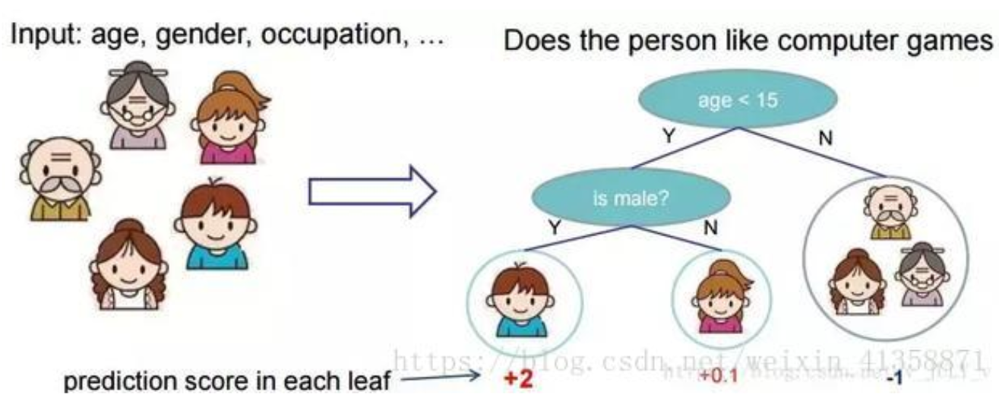 就这样，训练出了2棵树tree1和tree2，类似之前gbdt的原理，两棵树的结论累加起来便是最终的结论，所以小孩的预测分数就是两棵树中小孩所落到的结点的分数相加：2 + 0.9 = 2.9。爷爷的预测分数同理：-1 + （-0.9）= -1.9
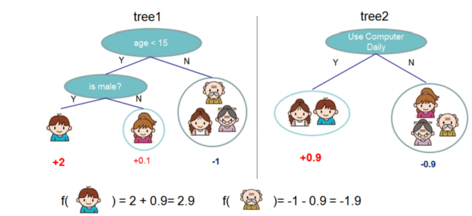 这个就是GBDT回归的一个栗子，即把每棵树的最优叶子结点相加，图来自陈天奇的ppt
平方损失函数MSE：这个是针对回归算法来说的\(\frac{1}{2} \sum_{0}^{n}\left(y_{i}-F\left(x_{i}\right)\right)^{2}\) 熟悉其他算法的原理应该知道，这个损失函数主要针对回归类型的问题，分类则是用熵值类的损失函数。具体到平方损失函数的式子，你可能已经发现它的一阶导其实就是残差的形式，所以基于残差的GBDT是一种特殊的GBDT模型，它的损失函数是平方损失函数，常用来处理回归类的问题。具体形式可以如下表示： 损失函数：\(L(y, F(x))=\frac{1}{2}(y-F(X))^{2}\) 因此求最小化的\(J=\frac{1}{2}(y-F(X))^{2}\) 哈哈此使可以求一阶导数了 损失函数的一阶导数（梯度）：\(\frac{\partial J}{\partial F\left(x_{i}\right)}=\frac{\partial \sum_{i} L\left(y_{i}, F\left(x_{i}\right)\right)}{\partial F\left(x_{i}\right)}=\frac{\partial L\left(y_{i}, F\left(x_{i}\right)\right)}{\partial F\left(x_{i}\right)}=F\left(x_{i}\right)-y_{i}\) 而参数就是负的梯度：\(y_{i}-F\left(x_{i}\right)=-\frac{\partial J}{\partial F\left(x_{i}\right)}\)
6.3.1 评价
基于残差的GBDT在解决回归问题上不算是一个好的选择，一个比较明显的缺点就是对异常值过于敏感。 当存在一个异常值的时候，就会导致残差灰常之大。。自行理解
6.4 GBDT分类算法
这里我们再看看GBDT分类算法，GBDT的分类算法从思想上和GBDT的回归算法没有区别，但是由于样本输出不是连续的值，而是离散的类别，导致我们无法直接从输出类别去拟合类别输出的误差。 为了解决这个问题，主要有两个方法，一个是用指数损失函数，此时GBDT退化为Adaboost算法。另一种方法是用类似于逻辑回归的对数似然损失函数的方法。也就是说，我们用的是类别的预测概率值和真实概率值的差来拟合损失。本文仅讨论用对数似然损失函数的GBDT分类。而对于对数似然损失函数，我们又有二元分类和多元分类的区别。
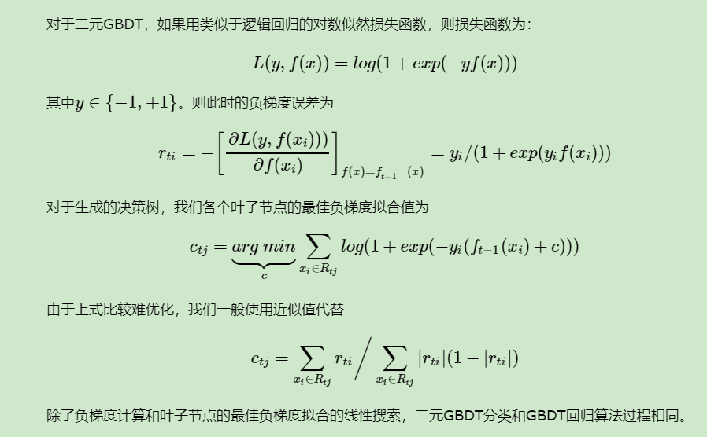
这里就是用到逻辑回归的损失函数了，其求导的特殊性
6.6 boosting
gbdt模型可以认为是是由k个基模型组成的一个加法运算式
\(\hat{y}_{i}=\sum_{k=1}^{K} f_{k}\left(x_{i}\right), f_{k} \in F\)
其中F是指所有基模型组成的函数空间 那么一般化的损失函数是预测值 \(\hat{y}_{i}\) 与 真实值\(y_{i}\) 之间的关系，如我们前面的平方损失函数，那么对于n个样本来说，则可以写成 \(L=\sum_{i=1}^{n} l\left(y_{i}, \hat{y}_{i}\right)\)
更一般的，我们知道一个好的模型，在偏差和方差上有一个较好的平衡，而算法的损失函数正是代表了模型的偏差面，最小化损失函数，就相当于最小化模型的偏差，但同时我们也需要兼顾模型的方差，所以目标函数还包括抑制模型复杂度的正则项，因此目标函数可以写成 \(O b j=\sum_{i=1}^{n} l\left(y_{i}, \hat{y}_{i}\right)+\sum_{k=1}^{K} \Omega\left(f_{k}\right)\) 其中 \(\Omega\) 代表了基模型的复杂度，若基模型是树模型，则树的深度、叶子节点数等指标可以反应树的复杂程度。
6.7 调参
见https://www.cnblogs.com/pinard/p/6143927.html
6.8 demo
Chapter 7 模型的评估与选择
参考周志华老师的西瓜书
7.1 经验误差与过拟合
分类错误率：分错样本数占样本总数的比例
精度：1-分类错误率
误差：样本的实际预测值与样本的真实输出之间的差异
- 训练误差：学习器在训练集上的误差(经验误差)
- 泛化误差：在新样本上的误差，我们是希望它小，但事先并不知道新样本什么样，因此只能缩小经验误差
过拟合：学多了，以至于把训练样本不含的不太一般的特性都学习到了
欠拟合：学少了，比较容易克服
过拟合是机器学习面临的关键障碍,过拟合不可避免，但是可以缩小
- 这个需要总结
7.2 评估方法
通常，可以根据实验测试来对学习器的泛化误差进行评估进而做出选择。因此需要使用一个test set来测试学习器对新样本的判别能力，然后用测试集上的“测试误差”“近似为泛化误差。
- 测试样本也是从样本真实分布中独立同分布取到
- 样本的训练集和测试集应该互斥
因为要保证”举一反三“的能力嘛！哈哈哈
7.3 留出法
简单粗暴 直接将数据集D划分为为两个互斥的集合，其中一个集合作为训练集S,另一个作为测试集T,S与T互斥。
分层抽样：保留类别比例的方式 可以先排序等在进行划分
缺点：
- S大，T小，评估结果不准确
- S小，T大，学习器训练的样本少，评估结果更加不准
scikit-learn中的train-test-split函数可以直接暴力划分
# Import necessary modules
from sklearn.model_selection import train_test_split
from sklearn.linear_model import LogisticRegression
from sklearn.model_selection import GridSearchCV
# Create the hyperparameter grid
c_space = np.logspace(-5, 8, 15)
param_grid = {'C': c_space, 'penalty': ['l1', 'l2']}
# Instantiate the logistic regression classifier: logreg
logreg = LogisticRegression()
# Create train and test sets
X_train, X_test, y_train, y_test = train_test_split(X, y, test_size = 0.4, random_state=42)
# Instantiate the GridSearchCV object: logreg_cv
logreg_cv = GridSearchCV(logreg, param_grid, cv=5)
# Fit it to the training data
logreg_cv.fit(X_train, y_train)
# Print the optimal parameters and best score
print("Tuned Logistic Regression Parameter: {}".format(logreg_cv.best_params_))
print("Tuned Logistic Regression Accuracy: {}".format(logreg_cv.best_score_))
<script.py> output:
Tuned Logistic Regression Parameter: {'C': 0.4393970560760795, 'penalty': 'l1'}
Tuned Logistic Regression Accuracy: 0.76521739130434787.4 交叉验证法
先将数据集D划分为k个大小相似的互斥子集,每个子集尽可能保持数据分布的一致性，即从D中通过分层抽样，然后每次用k-1个子集的并集作为训练集，余下的那个子集作为测试集，此时就可以获得k组训练集/测试集，从而进行k次训练和测试，最终返回的是k个结果的均值。
交叉验证法的稳定性和保真性很大程度上取决于k的取值
为减小因样本划分不同而引入的差别，通常使用随机划分不同子集重复
7.5 留一法
m个样本只有唯一的划分方式划分为m个子集，每个子集包含一个样本。训练集与初始数据集相比只少了一个样本
因此精高。但是计算开销大
7.6 自助法
7.7 包外估计
7.8 模型性能度量
也就是泛化能力的评估标准 >回归中一般使用均方误差
下面主要介绍几种分类性能度量指标
7.9 confusion_matrix
- 利用混淆矩阵进行评估
- 混淆矩阵说白了就是一张表格-
- 所有正确的预测结果都在对角线上，所以从混淆矩阵中可以很方便直观的看出哪里有错误，因为他们呈现在对角线外面。
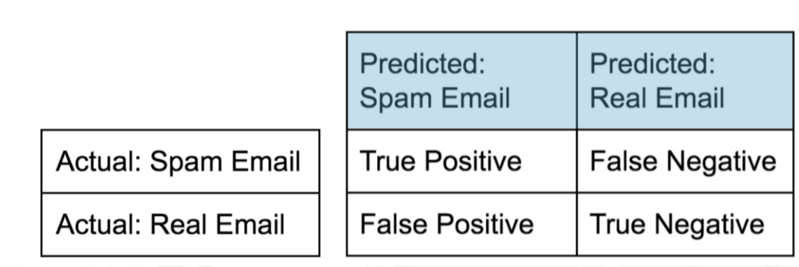
- 举个直观的例子
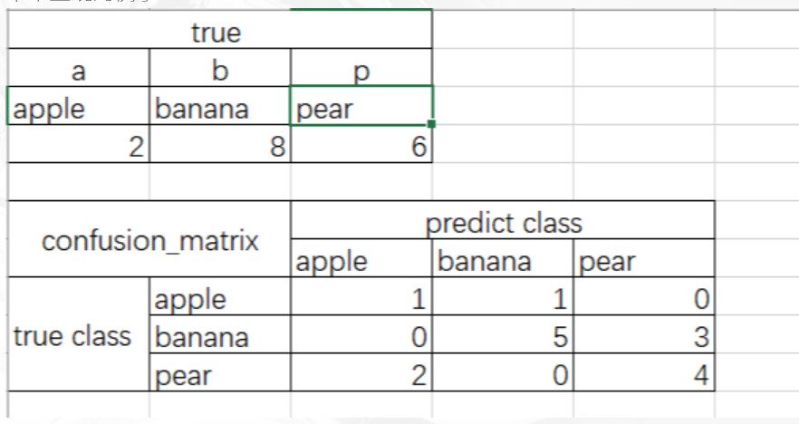
这个表格是一个混淆矩阵
正确的值是上边的表格，混淆矩阵是下面的表格，这就表示，apple应该有两个，但是只预测对了一个，其中一个判断为banana了，banana应该有8ge，但是5个预测对了3个判断为pear了，pear有应该有6个，但是2个判断为apple了，可见对角线上是正确的预测值，对角线之外的都是错误的。 这个混淆矩阵的实现代码
from sklearn.metrics import confusion_matrix
from sklearn.metrics import classification_report
y_test=["a","b","p","b","b","b","b","p","b","p","b","b","p","p","p","a"]
y_pred=["a","b","p","p","p","p","b","p","b","p","b","b","a","a","p","b"]
confusion_matrix(y_test, y_pred,labels=["a", "b","p"])
#array([[1, 1, 0],
[0, 5, 3],
[2, 0, 4]], dtype=int64)
print(classification_report(y_test,y_pred))
##
precision recall f1-score support
a 0.33 0.50 0.40 2
b 0.83 0.62 0.71 8
p 0.57 0.67 0.62 6
avg / total 0.67 0.62 0.64 16我传到github上面了
混淆矩阵demo
# Import necessary modules
from sklearn.metrics import classification_report
from sklearn.metrics import confusion_matrix
# Create training and test set
X_train, X_test, y_train, y_test = train_test_split(X,y,test_size=0.4,random_state=42)
# Instantiate a k-NN classifier: knn
knn = KNeighborsClassifier(6)
# Fit the classifier to the training data
knn.fit(X_train,y_train)
# Predict the labels of the test data: y_pred
y_pred = knn.predict(X_test)
# Generate the confusion matrix and classification report
print(confusion_matrix(y_test,y_pred))
print(classification_report(y_test,y_pred))7.10 补充知识
先给一个二分类的例子 其他同理
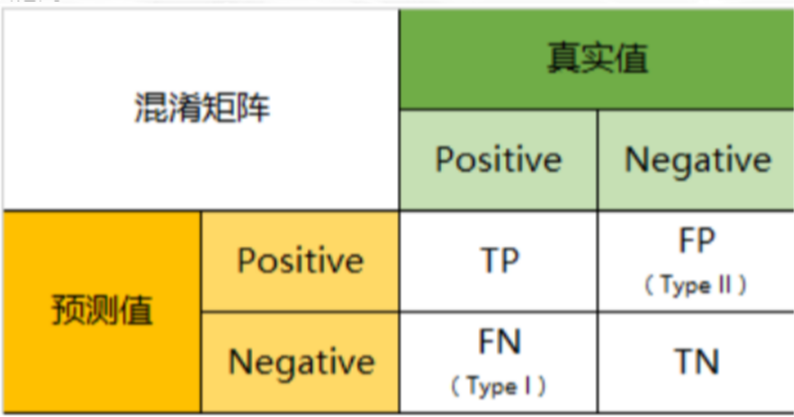
- TP(True Positive)：将正类预测为正类数，真实为0，预测也为0
- FN(False Negative)：将正类预测为负类数，真实为0，预测为1
- FP(False Positive)：将负类预测为正类数， 真实为1，预测为0
- TN(True Negative)：将负类预测为负类数，真实为1，预测也为1
因此:预测性分类模型，肯定是希望越准越好。那么，对应到混淆矩阵中，那肯定是希望TP与TN的数量大，而FP与FN的数量小。所以当我们得到了模型的混淆矩阵后，就需要去看有多少观测值在第二、四象限对应的位置，这里的数值越多越好；反之，在第一、三四象限对应位置出现的观测值肯定是越少越好。
7.11 几个二级指标定义
- 准确率（Accuracy）—— 针对整个模型 \(\frac{t p+t n}{t p+t n+f p+f n}\)
- 精确率（Precision） \(\frac{t p}{t p+f n}\)
- 灵敏度（Sensitivity）：就是召回率（Recall）召回率 = 提取出的正确信息条数 / 样本中的信息条数。通俗地说，就是所有准确的条目有多少被检索出来了
- 特异度（Specificity）
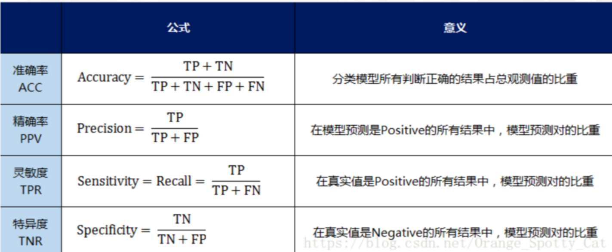
7.12 三级指标
\(\mathrm{F} 1\) Score \(=\frac{2 \mathrm{PR}}{\mathrm{P}+\mathrm{R}}\) 其中，P代表Precision，R代表Recall。 F1-Score指标综合了Precision与Recall的产出的结果。F1-Score的取值范围从0到1的，1代表模型的输出最好，0代表模型的输出结果最差reference
7.13 accuracy_score
分类准确率分数 - 分类准确率分数是指所有分类正确的百分比。分类准确率这一衡量分类器的标准比较容易理解，但是它不能告诉你响应值的潜在分布，并且它也不能告诉你分类器犯错的类型
sklearn.metrics.accuracy_score(y_true, y_pred, normalize=True, sample_weight=None)
#normalize：默认值为True，返回正确分类的比例；如果为False，返回正确分类的样本数#accuracy_score
import numpy as np
from sklearn.metrics import accuracy_score
y_pred = [1, 9, 9, 5,1,0,2,2]
y_true = [1,9,9,8,0,6,1,2]
print(accuracy_score(y_true, y_pred))
print(accuracy_score(y_true, y_pred, normalize=False))
#4
#5datacamp上面的一个例子
# Import necessary modules
from sklearn.neighbors import KNeighborsClassifier
from sklearn.model_selection import train_test_split
# Create feature and target arrays
X = digits.data
y = digits.target
# Split into training and test set
X_train, X_test, y_train, y_test = train_test_split(X, y, test_size = 0.2, random_state=42, stratify=y)
# Create a k-NN classifier with 7 neighbors: knn
knn = KNeighborsClassifier(n_neighbors=7)
# Fit the classifier to the training data
knn.fit(X_train, y_train)
y_pred=knn.predict(X_test)
# Print the accuracy
print(accuracy_score(y_test, y_pred))
#0.899967097.14 ROC
- ROC曲线指受试者工作特征曲线/接收器操作特性(receiveroperating characteristic，ROC)曲线,
- 是反映灵敏性和特效性连续变量的综合指标,是用构图法揭示敏感性和特异性的相互关系，
- 它通过将连续变量设定出多个不同的临界值，从而计算出一系列敏感性和特异性。
- ROC曲线是根据一系列不同的二分类方式（分界值或决定阈），以真正例率（也就是灵敏度recall）（True Positive Rate,TPR）为纵坐标，假正例率（1-特效性，）（False Positive Rate,FPR）为横坐标绘制的曲线。
- 要与混淆矩阵想结合
横轴FPR
\(\mathrm{FPR}=\frac{\mathrm{FP}}{\mathrm{FP}+\mathrm{TN}}\) 在所有真实值为Negative的数据中，被模型错误的判断为Positive的比例
如果两个概念熟，那就多看几遍 :smile:
7.15 纵轴recall
这个好理解就是找回来 在所有真实值为Positive的数据中，被模型正确的判断为Positive的比例 \(\mathrm{TPR}=\frac{\mathrm{TP}}{\mathrm{TP}+\mathrm{FN}}\)
7.16 ROC曲线解读
FPR与TPR分别构成了ROC曲线的横纵轴，因此我们知道在ROC曲线中，每一个点都对应着模型的一次结果
如果ROC曲线完全在纵轴上，代表这一点上，x=0，即FPR=0。模型没有把任何negative的数据错误的判为positive，预测完全准确 不知道哪个大佬能做出来。。:heart:
如果ROC曲线完全在横轴上，代表这一点上，y=0，即TPR=0。模型没有把任何positive的数据正确的判断为positive，预测完全不准确。 平心而论，这种模型能做出来也是蛮牛的，因为模型真正做到了完全不准确，所以只要反着看结果就好了嘛:smile:
如果ROC曲线完全与右上方45度倾角线重合，证明模型的准确率是正好50%，错判的几率是一半一半
-因此，我们绘制出来ROC曲线的形状，是希望TPR大，而FPR小。因此对应在图上就是曲线尽量往左上角贴近。45度的直线一般被常用作Benchmark，即基准模型，我们的预测分类模型的ROC要能优于45度线，否则我们的预测还不如50/50的猜测来的准确
7.17 ROC曲线绘制
- ROC曲线上的一系列点，代表选取一系列的阈值（threshold）产生的结果
- 在分类问题中，我们模型预测的结果不是negative/positive。而是一个negatvie或positive的概率。那么在多大的概率下我们认为观测值应该是negative或positive呢？这个判定的值就是阈值（threshold）。
- ROC曲线上众多的点，每个点都对应着一个阈值的情况下模型的表现。多个点连起来就是ROC曲线了
sklearn.metrics.roc_curve(y_true,y_score,pos_label=None, sample_weight=None, drop_intermediate=True)# Import the necessary modules
from sklearn.linear_model import LogisticRegression
from sklearn.metrics import confusion_matrix ,classification_report
# Create training and test sets
X_train, X_test, y_train, y_test = train_test_split(X, y, test_size = 0.4, random_state=42)
# Create the classifier: logreg
logreg = LogisticRegression()
# Fit the classifier to the training data
logreg.fit(X_train,y_train)
# Predict the labels of the test set: y_pred
y_pred = logreg.predict(X_test)
# Compute and print the confusion matrix and classification report
print(confusion_matrix(y_test, y_pred))
print(classification_report(y_test, y_pred))
# Import necessary modules
from sklearn.metrics import roc_curve
# Compute predicted probabilities: y_pred_prob
y_pred_prob = logreg.predict_proba(X_test)[:,1]
# Generate ROC curve values: fpr, tpr, thresholds
fpr, tpr, thresholds = roc_curve(y_test, y_pred_prob)
# Plot ROC curve
plt.plot([0, 1], [0, 1], 'k--')
plt.plot(fpr, tpr)
plt.xlabel('False Positive Rate')
plt.ylabel('True Positive Rate')
plt.title('ROC Curve')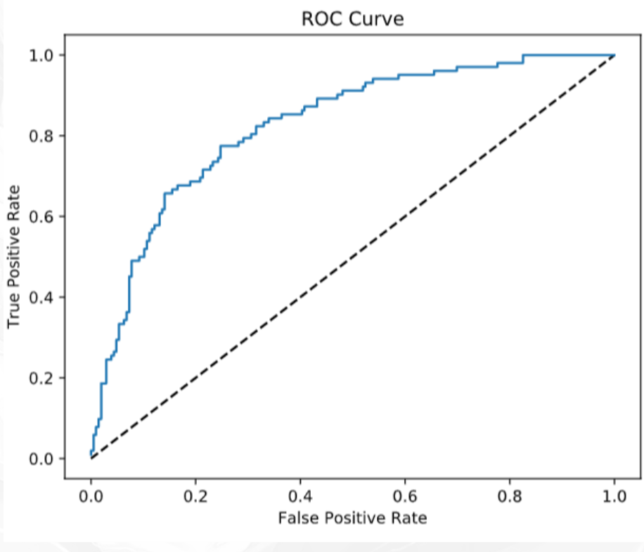
7.18 AUC （Area under the ROC curve）
AUC它就是值ROC曲线下的面积是多大。每一条ROC曲线对应一个AUC值。AUC的取值在0与1之间。
AUC = 1，代表ROC曲线在纵轴上，预测完全准确。不管Threshold选什么，预测都是100%正确的。
0.5 < AUC < 1，代表ROC曲线在45度线上方，预测优于50/50的猜测。需要选择合适的阈值后，产出模型。
AUC = 0.5，代表ROC曲线在45度线上，预测等于50/50的猜测。
0 < AUC < 0.5，代表ROC曲线在45度线下方，预测不如50/50的猜测。
AUC = 0，代表ROC曲线在横轴上，预测完全不准确。
# Import necessary modules
from sklearn.model_selection import cross_val_score
from sklearn.metrics import roc_auc_score
# Compute predicted probabilities: y_pred_prob
y_pred_prob = logreg.predict_proba(X_test)[:,1]
# Compute and print AUC score
print("AUC: {}".format(roc_auc_score(y_test, y_pred_prob)))
# Compute cross-validated AUC scores: cv_auc
cv_auc = cross_val_score(logreg, X, y, cv=5, scoring='roc_auc')
# Print list of AUC scores
print("AUC scores computed using 5-fold cross-validation: {}".format(cv_auc))
<script.py> output:
AUC: 0.8254806777079764
AUC scores computed using 5-fold cross-validation: [0.80148148 0.8062963 0.81481481 0.86245283 0.8554717 ]7.19 Precision-recall Curve
召回曲线也可以作为评估模型好坏的标准 - which is generated by plotting the precision and recall for different thresholds. As a reminder, precision and recall are defined as: Precision \(=\frac{T P}{T P+F P}\) Recall\(=\frac{T P}{T P+F N}\)
7.20 classification_report
测试模型精度的方法很多，可以看下官方文档的例子，记一些常用的即可 API官方文档 https://scikit-learn.org/stable/modules/classes.html
7.21 MSE&RMSE
方差，标准差 MSE:\((y_真实-y_预测)^2\)之和 RMSE：MSE开平方
# Import necessary modules
from sklearn.linear_model import ElasticNet
from sklearn.metrics import mean_squared_error
from sklearn.model_selection import GridSearchCV
from sklearn.model_selection import train_test_split
# Create train and test sets
X_train, X_test, y_train, y_test = train_test_split(X, y, test_size = 0.4, random_state=42)
# Create the hyperparameter grid
l1_space = np.linspace(0, 1, 30)
param_grid = {'l1_ratio': l1_space}
# Instantiate the ElasticNet regressor: elastic_net
elastic_net = ElasticNet()
# Setup the GridSearchCV object: gm_cv
gm_cv = GridSearchCV(elastic_net, param_grid, cv=5)
# Fit it to the training data
gm_cv.fit(X_train, y_train)
# Predict on the test set and compute metrics
y_pred = gm_cv.predict(X_test)
r2 = gm_cv.score(X_test, y_test)
mse = mean_squared_error(y_test, y_pred)
print("Tuned ElasticNet l1 ratio: {}".format(gm_cv.best_params_))
print("Tuned ElasticNet R squared: {}".format(r2))
print("Tuned ElasticNet MSE: {}".format(mse))
<script.py> output:
Tuned ElasticNet l1 ratio: {'l1_ratio': 0.20689655172413793}
Tuned ElasticNet R squared: 0.8668305372460283
Tuned ElasticNet MSE: 10.05791413339844Chapter 8 bias-varinace-error
8.1 bias
偏差：模型越复杂，模型的偏差越小，方差越小，因此会出现overfitting 准：bias描述的是根据样本拟合出的模型的输出预测结果的期望与样本真实结果的差距：\(E|y_{真实}-y_{预测}|\)，就是分类器在样本上（测试集）上拟合的好不好。因此想要降低bias，就要复杂化模型，增加模型的参数，容易导致过拟合，过拟合对应的是上面的high variance，点比较分散。low bias对应的就是点都打在靶心附近，所以描述的是准，但是不一定稳
8.2 variance
方差：模型越简单，模型的拟合度一般，模型方差越小，偏差越大，因此会出现underfitting 描述的是样本训练出来的模型在测试集上的表现，想要降低variance，就要简化模型，减少模型的复杂程度，这样比较容易欠拟合，low variance对应的就是点打的都很集中，但是不一定准
bias和variance的选择是一个tradeoff(取舍思维)，过高的varance对应的概念，有点「剑走偏锋」[矫枉过正」的意思，如果说一个人variance比较高， 可以理解为，这个人性格比较极端偏执，眼光比较狭窄，没有大局观。而过高的bias对应的概念，有点像「面面俱到」「大巧若拙] 的意思，如果说一个人bias比较高，可以理解为，这个人是个好好先生，谁都不得罪， 圆滑世故，说话的时候，什么都说了，但又好像什么都没说，眼光比较长远，有大局观。(感觉好分裂 ),或许可以说泛化能力更强，谁都适用，就是没啥用。泛化误差笔记
8.3 总结
偏差度量了学习算法的期望预测与真实结果的偏离程度，即刻画了算法本身的拟合能力；
方差度量了同样大小的训练集的变动所导致的学习性能的变化，即刻画了数据扰动所造成的影响；
噪声则表达了在当前任务上任何学习算法所能达到的期望泛化误差的下界，即刻画了学习问题的本身难度
偏差-方差分解说明，泛化性能是由学习算法的能力、数据的充分性以及学习任务本身的难度所共同决定的。给定的学习任务，为了取得好的泛化性能，则需使偏差较小，即能够充分拟合数据，并且使方差较小，即使数据扰动产生的影响小。一般来说方差与偏差是有冲突的，这称为方差-偏差窘境csdn
8.4 error
Error反映的是整个模型的准确度，说白了就是你给出的模型，input一个变量，和理想的output之间吻合程度，吻合度高就是Error低。Bias反映的是模型在样本上的输出与真实值之间的误差，即模型本身的精准度
\(error=bias+variance+噪声\)
Error反映的是整个模型的准确度，Bias反映的是模型在样本上的输出与真实值之间的误差，即模型本身的精准度，Variance反映的是模型每一次输出结果与模型输出期望之间的误差，即模型的稳定性
在一个实际系统中，Bias与Variance往往是不能兼得的。如果要降低模型的Bias，就一定程度上会提高模型的Variance，反之亦然。造成这种现象的根本原因是，我们总是希望试图用有限训练样本去估计无限的真实数据。当我们更加相信这些数据的真实性，而忽视对模型的先验知识，就会尽量保证模型在训练样本上的准确度，这样可以减少模型的Bias。但是，这样学习到的模型，很可能会失去一定的泛化能力，从而造成过拟合，降低模型在真实数据上的表现，增加模型的不确定性。相反，如果更加相信我们对于模型的先验知识，在学习模型的过程中对模型增加更多的限制，就可以降低模型的variance，提高模型的稳定性，但也会使模型的Bias增大。
Bias与Variance两者之间的trade-off是机器学习的基本主题之一，机会可以在各种机器模型中发现它的影子。具体到K-fold Cross Validation的场景，其实是很好的理解的。首先看Variance的变化，还是举打靶的例子。假设我把抢瞄准在10环，虽然每一次射击都有偏差，但是这个偏差的方向是随机的，也就是有可能向上，也有可能向下。那么试验次数越多，应该上下的次数越接近，那么我们把所有射击的目标取一个平均值，也应该离中心更加接近。更加微观的分析，模型的预测值与期望产生较大偏差，
在模型固定的情况下，原因还是出在数据上，比如说产生了某一些异常点。在最极端情况下，我们假设只有一个点是异常的，如果只训练一个模型，那么这个点会对整个模型带来影响，使得学习出的模型具有很大的variance。但是如果采用k-fold Cross Validation进行训练，只有1个模型会受到这个异常数据的影响，而其余k-1个模型都是正常的。在平均之后，这个异常数据的影响就大大减少了。相比之下，模型的bias是可以直接建模的，只需要保证模型在训练样本上训练误差最小就可以保证bias比较小，而要达到这个目的，就必须是用所有数据一起训练，才能达到模型的最优解。因此，k-fold Cross Validation的目标函数破坏了前面的情形，所以模型的Bias必然要会增大。
##如何处理 variance 较大的问题
减少特征数量
使用更简单的模型
增大你的训练数据集
使用正则化 加入随机因子，例如采用 bagging 和 boosting 方法
##如何处理 bias 较大的问题
增加特征数量
使用更复杂的模型
去掉正则化jianshu
Chapter 9 Tuning-Hyperparameters
超参数调节
Chapter 10 方法
10.1 梯度下降
在求解机器学习算法的模型参数，即无约束优化问题时，梯度下降（Gradient Descent）是最常采用的方法之一，另一种常用的方法是最小二乘法。这里就对梯度下降法做一个完整的总结。
10.2 梯度
在微积分里面，对多元函数的参数求∂偏导数，把求得的各个参数的偏导数以向量的形式写出来，就是梯度。比如函数f(x,y), 分别对x,y求偏导数，求得的梯度向量就是(∂f/∂x, ∂f/∂y)T,简称grad f(x,y)或者▽f(x,y)。对于在点(x0,y0)的具体梯度向量就是(∂f/∂x0, ∂f/∂y0)T.或者▽f(x0,y0)，如果是3个参数的向量梯度，就是(∂f/∂x, ∂f/∂y，∂f/∂z)T,以此类推 。
其实就可以理解为梯度下降是求偏导
那么这个梯度向量求出来有什么意义呢？他的意义从几何意义上讲，就是函数变化增加最快的地方。具体来说，对于函数f(x,y),在点(x0,y0)，沿着梯度向量的方向就是(∂f/∂x0, ∂f/∂y0)T的方向是f(x,y)增加最快的地方。或者说，沿着梯度向量的方向，更加容易找到函数的最大值。反过来说，沿着梯度向量相反的方向，也就是 -(∂f/∂x0, ∂f/∂y0)T的方向，梯度减少最快，也就是更加容易找到函数的最小值。
梯度就是函数变化最快的地方
10.3 上升vs下降
在机器学习算法中，在最小化损失函数时，可以通过梯度下降法来一步步的迭代求解，得到最小化的损失函数，和模型参数值。反过来，如果我们需要求解损失函数的最大值，这时就需要用梯度上升法来迭代了。
对的，求min
梯度下降法和梯度上升法是可以互相转化的。比如我们需要求解损失函数f(θ)的最小值，这时我们需要用梯度下降法来迭代求解。但是实际上，我们可以反过来求解损失函数-f(θ)的最大值，这时梯度上升法就派上用场了。
10.4 梯度下降
首先来看看梯度下降的一个直观的解释。比如我们在一座大山上的某处位置，由于我们不知道怎么下山，于是决定走一步算一步，也就是在每走到一个位置的时候，求解当前位置的梯度，沿着梯度的负方向，也就是当前最陡峭的位置向下走一步，然后继续求解当前位置梯度，向这一步所在位置沿着最陡峭最易下山的位置走一步。这样一步步的走下去，一直走到觉得我们已经到了山脚。当然这样走下去，有可能我们不能走到山脚，而是到了某一个局部的山峰低处。
从上面的解释可以看出，梯度下降不一定能够找到全局的最优解，有可能是一个局部最优解。当然，如果损失函数是凸函数，梯度下降法得到的解就一定是全局最优解。
因此很多时候可以转化为凸函数
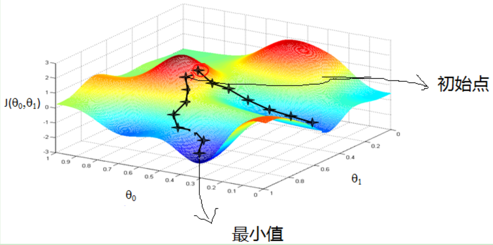
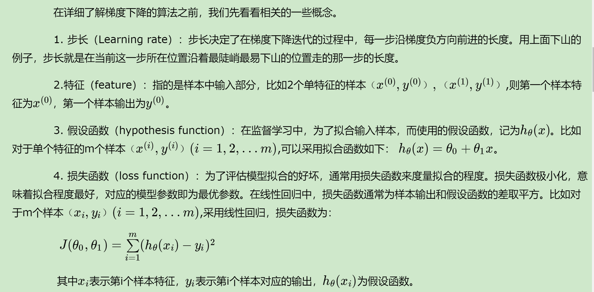
算法的推导可以参考刘建平
10.5 最小二乘
最小二乘法是用来做函数拟合或者求函数极值的方法。在机器学习，尤其是回归模型中，经常可以看到最小二乘法的身影，这里就对我对最小二乘法的认知做一个小结。[liu]https://www.cnblogs.com/pinard/p/5976811.html
10.6 牛顿法
10.7 坐标轴下降
Chapter 11 XGBoost
其实这个部分是有一个专门的bookdown的，但是还是想做一个总结，确保自己真正的理解了，不理解的就再请教一下学长好了，嘻嘻。。他说他知道我的问题在哪。。。。蛤我惊了！！！
一是算法本身的优化：在算法的弱学习器模型选择上，对比GBDT只支持决策树，还可以直接很多其他的弱学习器。在算法的损失函数上，除了本身的损失，还加上了正则化部分。在算法的优化方式上，GBDT的损失函数只对误差部分做负梯度（一阶泰勒）展开，而XGBoost损失函数对误差部分做二阶泰勒展开，更加准确。算法本身的优化是我们后面讨论的重点。
二是算法运行效率的优化：对每个弱学习器，比如决策树建立的过程做并行选择，找到合适的子树分裂特征和特征值。在并行选择之前，先对所有的特征的值进行排序分组，方便前面说的并行选择。对分组的特征，选择合适的分组大小，使用CPU缓存进行读取加速。将各个分组保存到多个硬盘以提高IO速度。
三是算法健壮性的优化：对于缺失值的特征，通过枚举所有缺失值在当前节点是进入左子树还是右子树来决定缺失值的处理方式。算法本身加入了L1和L2正则化项，可以防止过拟合，泛化能力更强。
11.1 基本知识
决策树的作用:即依靠某种指标进行树的分裂达到分类/回归的目的，总是希望纯度越高越好.
Xgboost就是由很多分类和回归树集成。
数据挖掘或机器学习中使用的决策树有两种主要类型： - 分类树分析是指预测结果是数据所属的类“yes or no”，“do or don’t” - 回归树分析是指预测结果可以被认为是实数（例如物价，时间长短）
之前学习的CART就是分类回归树的总称
举个栗子： - 判断高文星星是不是女的：结果是or不是 - 预测高文星星2016-2019年的花呗欠债额度：结果就是0-10000之间的任意数值了
对于回归树，没法再用分类树那套信息增益、信息增益率、基尼系数来判定树的节点分裂了，你需要采取新的方式评估效果，包括预测误差（常用的有均方误差、对数误差等）。而且节点不再是类别，是数值（预测值），那么怎么确定呢？有的是节点内样本均值，有的是最优化算出来的比如Xgboost
集成学习
所谓集成学习，是指构建多个分类器（弱分类器）对数据集进行预测，然后用某种策略将多个分类器预测的结果集成起来，作为最终预测结果。通俗比喻就是“三个臭皮匠赛过诸葛亮”，或一个公司董事会上的各董事投票决策，它要求每个弱分类器具备一定的“准确性”，分类器之间具备“差异性”。
集成学习根据各个弱分类器之间有无依赖关系，分为Boosting和Bagging两大流派：
- Boosting流派，各分类器之间有依赖关系，必须串行(当前分类器的训练是要依据前一个的结果的)，比如Adaboost、GBDT(Gradient Boosting Decision Tree)、Xgboost
- Bagging流派，各分类器之间没有依赖关系，可各自并行，比如随机森林（Random Forest）
boosting集成学习由多个相关联的决策树联合决策，什么叫相关联？举个例子 1、有一个样本[数据->标签]是：[(2，4，5)-> 4] 2、第一棵决策树用这个样本训练的预测为3.3 3、那么第二棵决策树训练时的输入，这个样本就变成了：[(2，4，5)-> 0.7] 4、也就是说，下一棵决策树输入样本会与前面决策树的训练和预测相关很快你会意识到，Xgboost为何也是一个boosting的集成学习了。
而一个回归树形成的关键点在于： 1.分裂点依据什么来划分（如前面说的均方误差最小，loss）； 2.分类后的节点预测值是多少（如前面说，有一种是将叶子节点下各样本实际值得均值作为叶子节点预测误差，或者计算所得）
至于另一类集成学习方法，比如RandomForest（随机森林）算法，各个决策树是独立的、每个决策树在样本堆里随机选一批样本，随机选一批特征进行独立训练，各个决策树之间没有啥关系。主要就是vote就好
理解完Adaboost和GBDT的概念之后理解xgb会比较轻松一点，因为xgb可以解决前面两个的缺陷。
11.2 xgb的定义
xgb是gbdt的增强版，就是原理很相似，主要是目标函数定义会有很大的差别，但是也有别的差别
目标函数 \[\begin{aligned} O b j^{(t)} &=\sum_{i=1}^{n} l\left(y_{i}, \hat{y}_{i}^{t}\right)+\sum_{i=i}^{t} \Omega\left(f_{i}\right) \\ &=\sum_{i=1}^{n} l\left(y_{i}, \hat{y}_{i}^{t-1}+f_{t}\left(x_{i}\right)\right)+\Omega\left(f_{t}\right)+\text { constant } \end{aligned}\] \(\Omega\left(f_{t}\right)\)是正则项，这个后面展开 constant是常数项可以考虑忽略
利用泰勒展开式近似这个目标函数： \[f(x+\Delta x) \simeq f(x)+f^{\prime}(x) \Delta x+\frac{1}{2} f^{\prime \prime}(x) \Delta x^{2}\] 那么在目标函数中中，我们把 \(\hat{y}_{i}^{t-1}\) 看成是等式泰勒展开式中的\(x\)， \(f_{t}\left(x_{i}\right)\) 看成是 \(\Delta x\) ，因此等式目标函数可以写成：
\[O b j^{(t)}=\sum_{i=1}^{n}\left[l\left(y_{i}, \hat{y}_{i}^{t-1}\right)+g_{i} f_{t}\left(x_{i}\right)+\frac{1}{2} h_{i} f_{t}^{2}\left(x_{i}\right)\right]+\Omega\left(f_{t}\right)+ constant \]
方括号里面的是损失函数，常见的损失函数有均方误差，logistic损失函数\(l\left(y_{i}, \hat{y}_{i}\right)=y_{i} \ln \left(1+e^{-y_{i}}\right)+\left(1-y_{i}\right) \ln \left(1+e^{y_{i}}\right)\)等
其中 \(g_{i}\) 为损失函数的一阶导， \(h_i\) 为损失函数的二阶导，注意这里的导是对 \(\hat{y}_{i}^{t-1}\) 求导。我们以平方损失函数为例\(\sum_{i=1}^{n}\left(y_{i}-\left(\hat{y}_{i}^{t-1}+f_{t}\left(x_{i}\right)\right)\right)^{2}\) ，则分别给出\(g_i\),\(h_i\)就是第\(t\)个学习器的一阶导和二阶导
\[g_{i}=\partial_{\hat{y}^{t-1}}\left(\hat{y}^{t-1}-y_{i}\right)^{2}=2\left(\hat{y}^{t-1}-y_{i}\right),\]
\[\quad h_{i}=\partial_{\hat{y}^{t-1}}^{2}\left(\hat{y}^{t-1}-y_{i}\right)^{2}=2\] 看这个式子或许更清楚 \(g_{t}=\frac{\partial L\left(y_{i}, f_{t-1}\left(x_{i}\right)\right.}{\partial f_{t-1}\left(x_{i}\right)}, h_{t}=\frac{\partial^{2} L\left(y_{i}, f_{t-1}\left(x_{i}\right)\right.}{\partial f_{t-1}^{2}\left(x_{i}\right)}\)
由于在第t步 \(\hat{y}_{i}^{t-1}\) 其实是一个已知的值(残差)，所以 \(l\left(y_{i}, \hat{y}_{i}^{t-1}\right)\)是一个常数，其对函数优化不会产生影响，因此，目标函数可以写成： \[O b j^{(t)} \approx \sum_{i=1}^{n}\left[g_{i} f_{t}\left(x_{i}\right)+\frac{1}{2} h_{i} f_{t}^{2}\left(x_{i}\right)\right]+\Omega\left(f_{t}\right)\]
另外\(f_{t}(x_i)\)可以转化为\(w_{q(x)}\),其中\(q(x)\) 代表了每个样本在哪个叶子结点上,而 \(w_q\) 则代表了哪个叶子结点取什么\(w\)值,所以\(w_{q(x)}\)就代表了每个样本的取值\(w_j\) (即预测值).
我们假设\(I_{j}=\left\{i | q\left(x_{i}\right)=j\right\}\)为第j个叶子节点的样本集合，则上式根据上面的一些变换可以写成：
\[\begin{aligned} O b j^{(t)} & \approx \sum_{i=1}^{n}\left[g_{i} f_{t}\left(x_{i}\right)+\frac{1}{2} h_{i} f_{t}^{2}\left(x_{i}\right)\right]+\Omega\left(f_{t}\right) \\ &=\sum_{i=1}^{n}\left[g_{i} w_{q\left(x_{i}\right)}+\frac{1}{2} h_{i} w_{q\left(x_{i}\right)}^{2}\right]+\gamma T+\frac{1}{2} \lambda \sum_{j=1}^{T} w_{j}^{2} \\ &=\sum_{j=1}^{T}\left[\left(\sum_{i \in I_{j}} g_{i}\right) w_{j}+\frac{1}{2}\left(\sum_{i \in I_{j}} h_{i}+\lambda\right) w_{j}^{2}\right]+\gamma T \end{aligned}\]
第二步是遍历所有的样本后求每个样本的损失函数，但样本最终会落在叶子节点上，所以我们也可以遍历叶子节点，然后获取叶子节点上的样本集合，最后在求损失函数。
即我们之前样本的集合，现在都改写成叶子结点的集合，由于一个叶子结点有多个样本存在，因此才有了\(\sum_{i \in I_{j}} g_{i}\)和\(\sum_{i \in I_{j}} h_{i}\)两 项，然后定义\(G_i=\sum_{i \in I_{j}} g_{i}\),\(H_i=\sum_{i \in I_{j}} h_{i}\),
则上式可以写成: \[O b j^{(t)}=\sum_{j=1}^{T}\left[G_{j} w_{j}+\frac{1}{2}\left(H_{j}+\lambda\right) w_{j}^{2}\right]+\gamma T\] 这里我们要注意 \(G_i=\sum_{i \in I_{j}} g_{i}\),\(H_i=\sum_{i \in I_{j}} h_{i}\),是前t-1步得到的结果，其值已知可视为常数，只有最后一棵树的叶子节点 \(w_{j}\) 不确定，那么将目标函数对 \(w_{j}\) 求一阶导并令其等0，则可以求得叶子结点 j对应的权值： \[w_{j}^{*}=-\frac{G_{j}}{H_{j}+\lambda}\] 此时目标函数就可以简化为 \[O b j=-\frac{1}{2} \sum_{j=1}^{T} \frac{G_{j}^{2}}{H_{j}+\lambda}+\gamma T\] 最终的目标函数只依赖于每个数据点的在误差函数上的一阶导数和二阶导数
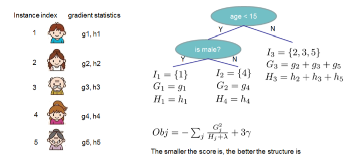
11.3 目标函数的正则项
目标是建立K个回归树，使得树群的预测值尽量接近真实值（准确率）而且有尽量大的泛化能力（更为本质的东西）
目标函数不考虑常数项可以简写成： \(L(\phi)=\sum_{i} l\left(\hat{y}_{i}-y_{i}\right)+\sum_{k} \Omega\left(f_{k}\right)\) 有损失函数和正则项构成
正则项:
是考虑模型的复杂度的，在logistic那里有专门的讲过的，因此逻辑回归是基础，蛤蛤
表示树的复杂度的函数，值越小复杂度越低，泛化能力越强
正则表达式: \[\Omega(f)=\gamma T+\frac{1}{2} \lambda\|w_j\|^{2}\] \(T\)表示叶子节点的个数，\(w_j\)表示第j个节点的数值。直观上看，目标要求预测误差尽量小，且叶子节点\(T\)尽量少，节点数值\(w_j\)尽量不极端。
因此xgboost算法中对树的复杂度项包含了两个部分，一个是叶子节点个数\(T\)，一个是叶子节点得分，L2正则化项\(w_j\)，针对每个叶结点的得分增加L2平滑，目的也是为了避免过拟合
假设弱学习器是决策树下面给出了xgb基于正则项的求解方式
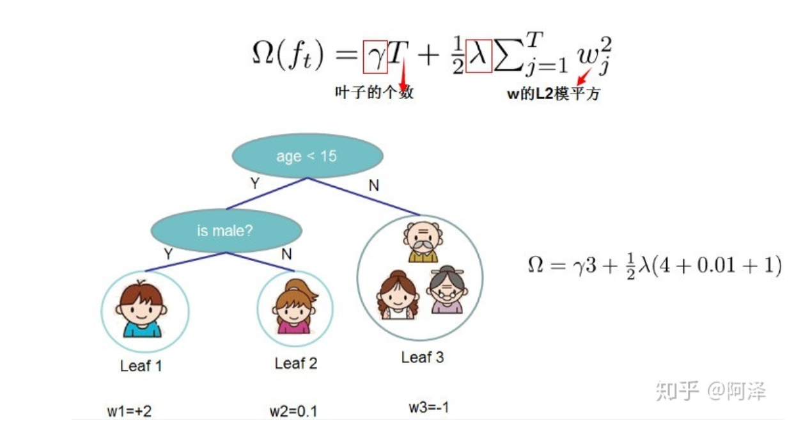
从而，加了正则项的目标函数里就出现了两种累加
一种是\(i - > n\)（样本数）
一种是\(j -> T\)（叶子节点数）
一般来说，目标函数都包括两项损失函数和正则项 \(\operatorname{Obj}(\Theta)=L(\Theta)+\Omega(\Theta)\)
- 损失函数(误差函数)是为了说明模型拟合数据集的效果
- 正则项是为了惩罚模型的复杂度
误差函数鼓励我们的模型尽量去拟合训练数据，使得最后的模型会有比较少的bias。而正则化项则鼓励更加简单的模型。因为当模型简单之后，有限数据拟合出来结果的随机性比较小，不容易过拟合，使得最后模型的预测更加稳定
xgboost的原始论文中给出了两种分裂节点的方法
11.4 枚举所有不同树结构的贪心法
目标函数的最终定义是当我们指定一个树的结构的时候，我们在目标上面最多减少多少。我们可以把它叫做结构分数(structure score)
不断地枚举不同树的结构，利用这个打分函数来寻找出一个最优结构的树，加入到我们的模型中，再重复这样的操作。不过枚举所有树结构这个操作不太可行，所以常用的方法是贪心法，每一次尝试去对已有的叶子加入一个分割。对于一个具体的分割方案，我们可以获得的增益可以由如下公式计算。
在GBDT里面，我们是直接拟合的CART回归树，所以树节点分裂使用的是均方误差。XGBoost这里不使用均方误差，而是使用贪心法，即每次分裂都期望最小化我们的损失函数的误差
\[\begin{aligned} \hat{y}_{i}^{(0)} &=0 \\ \hat{y}_{i}^{(1)} &=f_{1}\left(x_{i}\right)=\hat{y}_{i}^{(0)}+f_{1}\left(x_{i}\right) \\ \hat{y}_{i}^{(2)} &=f_{1}\left(x_{i}\right)+f_{2}\left(x_{i}\right)=\hat{y}_{i}^{(1)}+f_{2}\left(x_{i}\right) \\ & \cdots \\ \hat{y}_{i}^{(t)} &=\sum_{k=1}^{t} f_{k}\left(x_{i}\right)=\hat{y}_{i}^{(t-1)}+f_{t}\left(x_{i}\right) \end{aligned}\]
因此在训练的第\(t\)步\(\hat{y}_{i}^{(t-1)}\)是已知对的，就是找到一个$f_{t}(x_{i}) $使得目标函数更加优化的更快。
贪心算法的流程
从深度为0的树开始，对每个叶节点枚举所有的可用特征；
针对每个特征，把属于该节点的训练样本根据该特征值进行升序排列，通过线性扫描的方式来决定该特征的最佳分裂点，并记录该特征的分裂收益；
选择收益最大的特征作为分裂特征，用该特征的最佳分裂点作为分裂位置，在该节点上分裂出左右两个新的叶节点，并为每个新节点关联对应的样本集回到第 1 步，递归执行到满足特定条件为止
计算每个特征的收益
那么如何计算上面的收益呢，很简单，仍然紧扣目标函数就可以了。假设我们在某一节点上二分裂成两个节点，分别是左（L）右（R），则分列前的目标函数是: \[-\frac{1}{2}\left[\frac{\left(G_{L}+G_{R}\right)^{2}}{H_{L}+H_{R}+\lambda}\right]+\gamma\] 分裂后 \[-\frac{1}{2}\left[\frac{G_{L}^{2}}{H_{L}+\lambda}+\frac{G_{R}^{2}}{H_{R}+\lambda}\right]+2\gamma\] 则对于目标函数来说，分裂后的收益是（这里假设是最小化目标函数，所以用分裂前-分裂后） \[Gain =\frac{1}{2}\left[\frac{G_{L}^{2}}{H_{L}+\lambda}+\frac{G_{R}^{2}}{H_{R}+\lambda}-\frac{\left(G_{L}+G_{R}\right)^{2}}{H_{L}+H_{R}+\lambda}\right]-\gamma\]
如果增益Gain>0，即分裂为两个叶子节点后，目标函数下降了，那么我们会考虑此次分裂的结果。
高效的枚举 我们可以发现对于所有的分裂点，我们只要做一遍从左到右的扫描就可以枚举出所有分割的梯度和\(G_{L}\)和\(G_{R}\)。然后用上面的公式计算每个分割方案的分数就可以了。
对于每次扩展，我们还是要枚举所有可能的分割方案，如何高效地枚举所有的分割呢？我假设我们要枚举所有x < a 这样的条件，对于某个特定的分割a我们要计算a左边和右边的导数和。
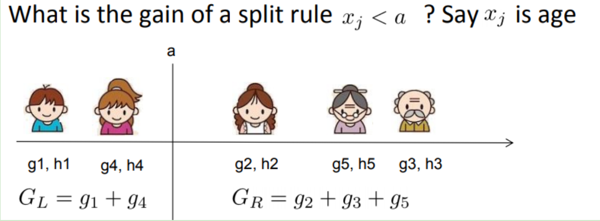
可以发现对于所有的a，我们只要做一遍从左到右的扫描就可以枚举出所有分割的梯度和\(G_L\)和\(G_R\)。然后用上面的公式计算每个分割方案的分数就可以了。
观察这个目标函数，大家会发现第二个值得注意的事情就是引入分割不一定会使得情况变好，因为我们有一个引入新叶子的惩罚项。优化这个目标对应了树的剪枝，当引入的分割带来的增益小于一个阀值的时候，我们可以剪掉这个分割。
大家可以发现，当我们正式地推导目标的时候，像计算分数和剪枝这样的策略都会自然地出现，而不再是一种因为heuristic（启发式）而进行的操作了。
感觉现在对阈值这个概念理解的更透彻了，其实就是指定一个临界值，方便剔除局部最优解
但是，在一个结点分裂时，可能有很多个分裂点，每个分裂点都会产生一个增益，如何才能寻找到最优的分裂点呢？接下来会讲到。
11.5 近似算法
The exact greedy algorithm is very powerful since it enumerates over all possible splitting points greedily. However,it is impossible to efficiently do so when the data does not fit entirely into memory. Same problem also arises in the distributed setting. To support effective gradient tree boosting in these two settings, an approximate algorithm is needed.
贪婪算法可以的到最优解，但当数据量太大时则无法读入内存进行计算，近似算法主要针对贪婪算法这一缺点给出了近似最优解。
对于每个特征，只考察分位点可以减少计算复杂度。
To summarize, the algorithm first proposes candidate splitting points according to percentiles of feature distribution (a specific criteria will be given in Sec.The algorithm then maps the continuous features into buckets split by these candidate points, aggregates the statistics and finds the best solution among proposals based on the aggregated statistics.(Chen and Guestrin 2016)
该算法会首先根据特征分布的分位数提出候选划分点，然后将连续型特征映射到由这些候选点划分的桶中，然后聚合统计信息找到所有区间的最佳分裂点。
下图给出不同种分裂策略的 AUC 变换曲线，横坐标为迭代次数，纵坐标为测试集 AUC，eps 为近似算法的精度，其倒数为桶的数量。
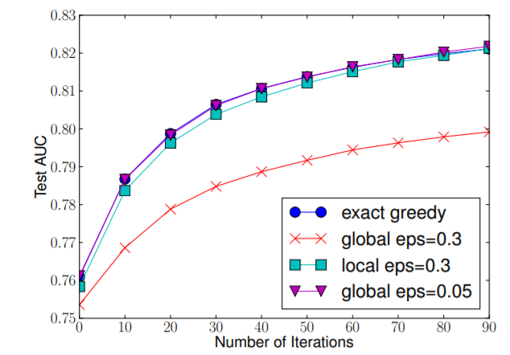
We find that the local proposal indeed requires fewer candidates. The global proposal can be as accurate as the local one given enough candidates
在提出候选切分点时有两种策略：
- Global：学习每棵树前就提出候选切分点，并在每次分裂时都采用这种分割；
- Local：每次分裂前将重新提出候选切分点。
直观上来看，Local 策略需要更多的计算步骤，而Global策略因为节点没有划分所以需要更多的候选点。我们可以看到 Global 策略在候选点数多时(eps小)可以和Local 策略在候选点少时（eps 大）具有相似的精度。此外我们还发现，在eps 取值合理的情况下，分位数策略可以获得与贪婪算法相同的精度。
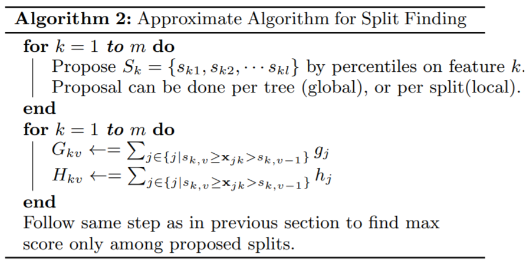
第一个 for 循环：对特征 k 根据该特征分布的分位数找到切割点的候选集合\(S_{k}=\left\{s_{k 1}, s_{k 2}, \dots, s_{k l}\right\}\) 。XGBoost 支持 Global 策略和 Local 策略。
第二个 for 循环：针对每个特征的候选集合，将样本映射到由该特征对应的候选点集构成的分桶区间中，即\(\boldsymbol{s}_{k, v} \geq x_{j k}>s_{k, v-1}\)，对每个桶统计 G,H 值，最后在这些统计量上寻找最佳分裂点。
11.5.1 选择分位点
事实上， XGBoost 不是简单地按照样本个数进行分位，而是以二阶导数值 \(h_i\) 作为样本的权重进行划分，
对于样本权值相同的数据集来说，找到候选分位点已经有了解决方案（GK 算法），但是当样本权值不一样时，该如何找到候选分位点呢？（作者给出了一个 Weighted Quantile Sketch 算法见paper
11.6 xgb缺失值的处理
11.6.1 稀疏感知算法
XGBoost 在构建树的节点过程中只考虑非缺失值的数据遍历，而为每个节点增加了一个缺省方向，当样本相应的特征值缺失时，可以被归类到缺省方向上，最优的缺省方向可以从数据中学到。至于如何学到缺省值的分支，其实很简单，分别枚举特征缺省的样本归为左右分支后的增益，选择增益最大的枚举项即为最优缺省方向。
在构建树的过程中需要枚举特征缺失的样本，乍一看该算法的计算量增加了一倍，但其实该算法在构建树的过程中只考虑了特征未缺失的样本遍历，而特征值缺失的样本无需遍历只需直接分配到左右节点，故算法所需遍历的样本量减少，下图可以看到稀疏感知算法比 basic 算法速度快了超过 50 倍。
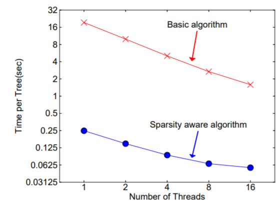
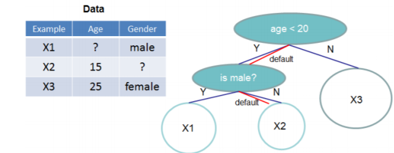 算法伪代码
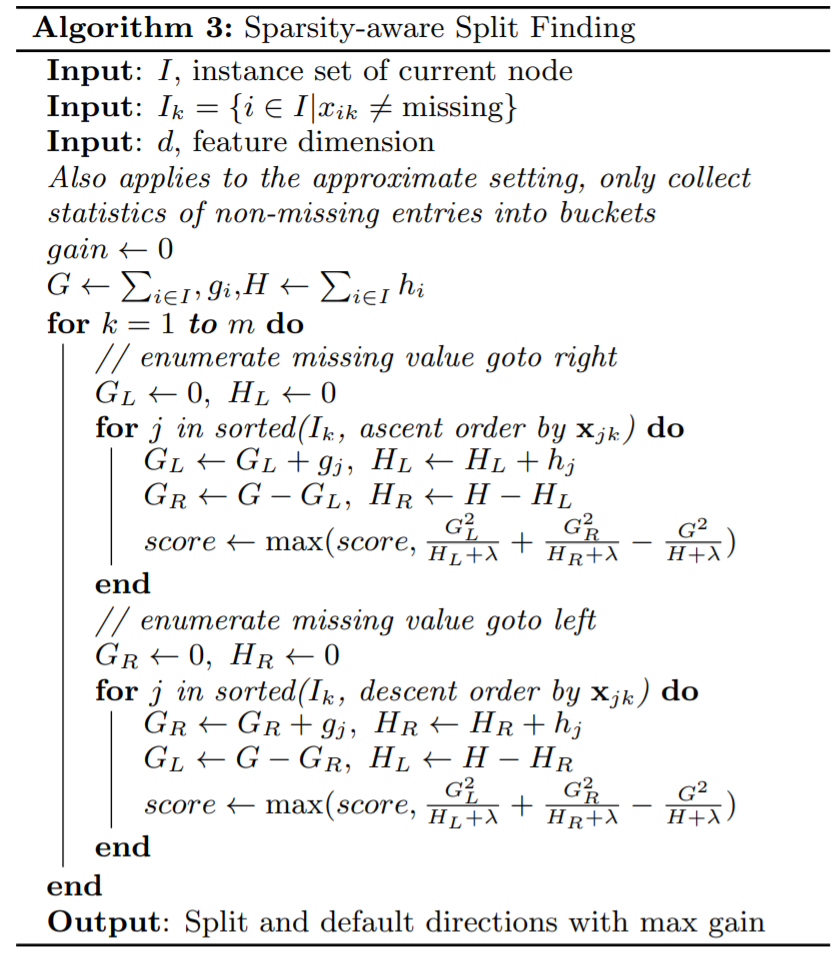
11.7 工程实现
11.7.1 Column Block for Parallel Learning
In order to reduce the cost of sorting, we propose to store the data in in-memory units,which we called block. Data in each block is stored in the compressed column (CSC) format, with each column sorted by the corresponding feature value. This input data layout only needs to be computed once before training, and can be reused in later iterations.(Chen and Guestrin 2016)
我们知道，决策树的学习最耗时的一个步骤就是在每次寻找最佳分裂点是都需要对特征的值进行排序。
而 XGBoost 在训练之前对根据特征对数据进行了排序，然后保存到块结构中，并在每个块结构中都采用了稀疏矩阵存储格式（Compressed Sparse Columns Format，CSC）进行存储，后面的训练过程中会重复地使用块结构，可以大大减小计算量。
每一个块结构包括一个或多个已经排序好的特征； 缺失特征值将不进行排序； 每个特征会存储指向样本梯度统计值的索引，方便计算一阶导和二阶导数值；
这种块结构存储的特征之间相互独立，方便计算机进行并行计算。在对节点进行分裂时需要选择增益最大的特征作为分裂，这时各个特征的增益计算可以同时进行，这也是 Xgboost 能够实现分布式或者多线程计算的原因。
In the exact greedy algorithm, we store the entire dataset in a single block and run the split search algorithm by linearly scanning over the pre-sorted entries. We do the split finding of all leaves collectively, so one scan over the block will collect the statistics of the split candidates in all leaf branches. Fig. 6 shows how we transform a dataset into the format and find the optimal split using the block structure.(Chen and Guestrin 2016)
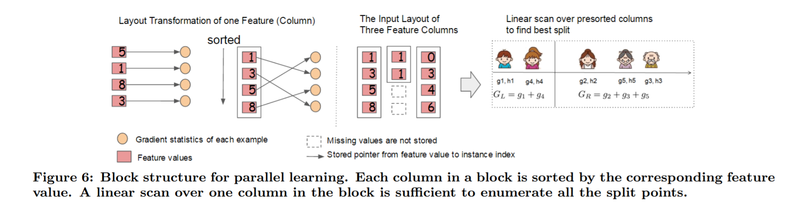
在贪婪算法中，将整个数据集存储在一个块中，并通过线性扫描预排序的条目来运行拆分搜索算法
The block structure also helps when using the approximate algorithms. Multiple blocks can be used in this case,with each block corresponding to subset of rows in the dataset.Different blocks can be distributed across machines, or stored on disk in the out-of-core setting. Using the sorted structure, the quantile finding step becomes a linear scan over the sorted columns. This is especially valuable for local proposal algorithms, where candidates are generated frequently at each branch. The binary search in histogram aggregation also becomes a linear time merge style algorithm.Collecting statistics for each column can be parallelized,giving us a parallel algorithm for split finding.(Chen and Guestrin 2016)
近似算法保存为多个块结构可以使用多个块，每个块对应于数据集中的行的子集。不同的块可以分布在计算机上，也可以以核外设置存储在磁盘上。使用排序的结构，分位数查找步骤变为对排序的列进行线性扫描。这对于本地投标算法特别有价值，因为本地投标算法会在每个分支频繁生成候选对象
11.8 缓存访问优化算法
块结构的设计可以减少节点分裂时的计算量，但特征值通过索引访问样本梯度统计值的设计会导致访问操作的内存空间不连续，这样会造成缓存命中率低，从而影响到算法的效率。
为了解决缓存命中率低的问题，XGBoost提出了缓存访问优化算法：为每个线程分配一个连续的缓存区，将需要的梯度信息存放在缓冲区中，这样就是实现了非连续空间到连续空间的转换，提高了算法效率。
此外适当调整块大小，也可以有助于缓存优化。
线程： 进程： （1）以多进程形式，允许多个任务同时运行； （2）以多线程形式，允许单个任务分成不同的部分运行； （3）提供协调机制，一方面防止进程之间和线程之间产生冲突，另一方面允许进程之间和线程之间共享资源。cnblog
进程就是包换上下文切换的程序执行时间总和 = CPU加载上下文+CPU执行+CPU保存上下文 线程是什么呢？ 进程的颗粒度太大，每次都要有上下的调入，保存，调出。如果我们把进程比喻为一个运行在电脑上的软件，那么一个软件的执行不可能是一条逻辑执行的，必定有多个分支和多个程序段，就好比要实现程序A，实际分成a，b，c等多个块组合而成。那么这里具体的执行就可能变成：程序A得到CPU =》CPU加载上下文，开始执行程序A的a小段，然后执行A的b小段，然后再执行A的c小段，最后CPU保存A的上下文。 这里a，b，c的执行是共享了A的上下文，CPU在执行的时候没有进行上下文切换的。这里的a，b，c就是线程，也就是说线程是共享了进程的上下文环境，的更为细小的CPU时间段。 到此全文结束，再一个总结： 进程和线程都是一个时间段的描述，是CPU工作时间段的描述，不过是颗粒大小不同。
11.9 “核外”块计算
这里我觉得理解一个大概就好，主要是提升速度的，对优化目标函数没有影响
当数据量过大时无法将数据全部加载到内存中，只能先将无法加载到内存中的数据暂存到硬盘中，直到需要时再进行加载计算，而这种操作必然涉及到因内存与硬盘速度不同而造成的资源浪费和性能瓶颈。为了解决这个问题，XGBoost独立一个线程专门用于从硬盘读入数据，以实现处理数据和读入数据同时进行。
此外，XGBoost 还用了两种方法来降低硬盘读写的开销：
块压缩：对 Block 进行按列压缩，并在读取时进行解压； 块拆分：将每个块存储到不同的磁盘中，从多个磁盘读取可以增加吞吐量。
11.10 优点
精度更高：GBDT 只用到一阶泰勒展开，而XGBoost对损失函数进行了二阶泰勒展开。XGBoost 引入二阶导一方面是为了增加精度，另一方面也是为了能够自定义损失函数，二阶泰勒展开可以近似大量损失函数； 灵活性更强：GBDT以CART作为基分类器，XGBoost不仅支持CART还支持线性分类器，（使用线性分类器的 XGBoost 相当于带L1和L2正则化项的逻辑斯蒂回归（分类问题）或者线性回归（回归问题））。此外，XGBoost 工具支持自定义损失函数，只需函数支持一阶和二阶求导； 正则化：XGBoost 在目标函数中加入了正则项，用于控制模型的复杂度。正则项里包含了树的叶子节点个数、叶子节点权重的L2范式。正则项降低了模型的方差，使学习出来的模型更加简单，有助于防止过拟合； Shrinkage（缩减）：相当于学习速率。XGBoost在进行完一次迭代后，会将叶子节点的权重乘上该系数，主要是为了削弱每棵树的影响，让后面有更大的学习空间； 列抽样：XGBoost 借鉴了随机森林的做法，支持列抽样，不仅能降低过拟合，还能减少计算； 缺失值处理：XGBoost 采用的稀疏感知算法极大的加快了节点分裂的速度； 可以并行化操作：块结构可以很好的支持并行计算。
11.11 缺点
虽然利用预排序和近似算法可以降低寻找最佳分裂点的计算量，但在节点分裂过程中仍需要遍历数据集； 预排序过程的空间复杂度过高，不仅需要存储特征值，还需要存储特征对应样本的梯度统计值的索引，相当于消耗了两倍的内存。
Chen, Tianqi, and Carlos Guestrin. 2016. “XGBoost: A Scalable Tree Boosting System.” CoRR abs/1603.02754. http://arxiv.org/abs/1603.02754.